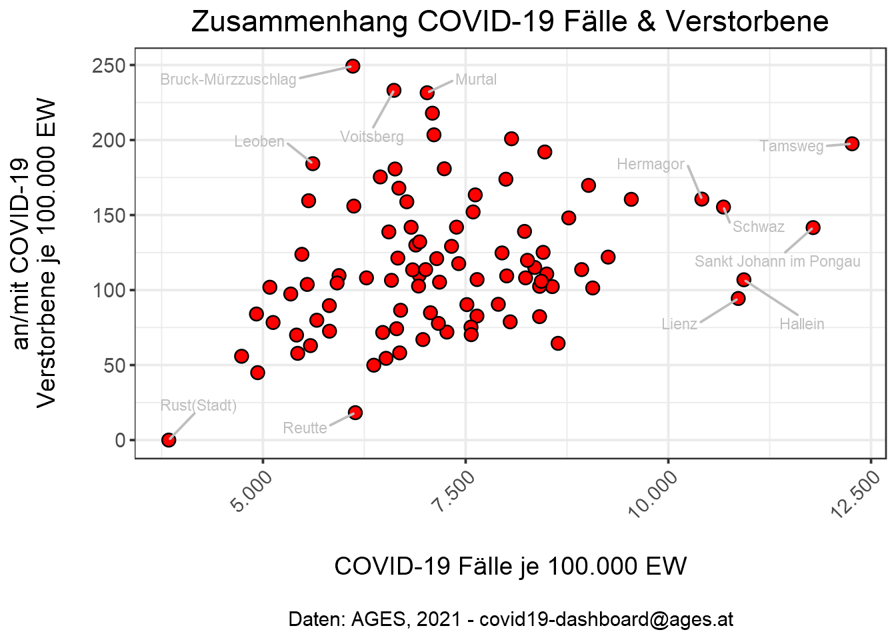
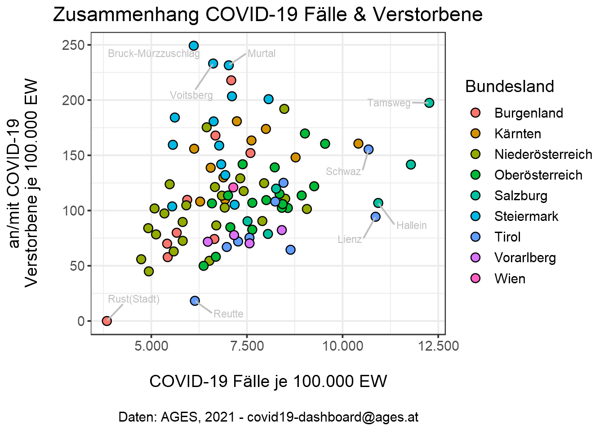
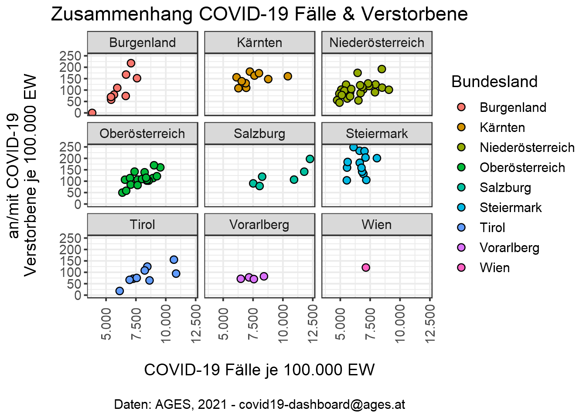
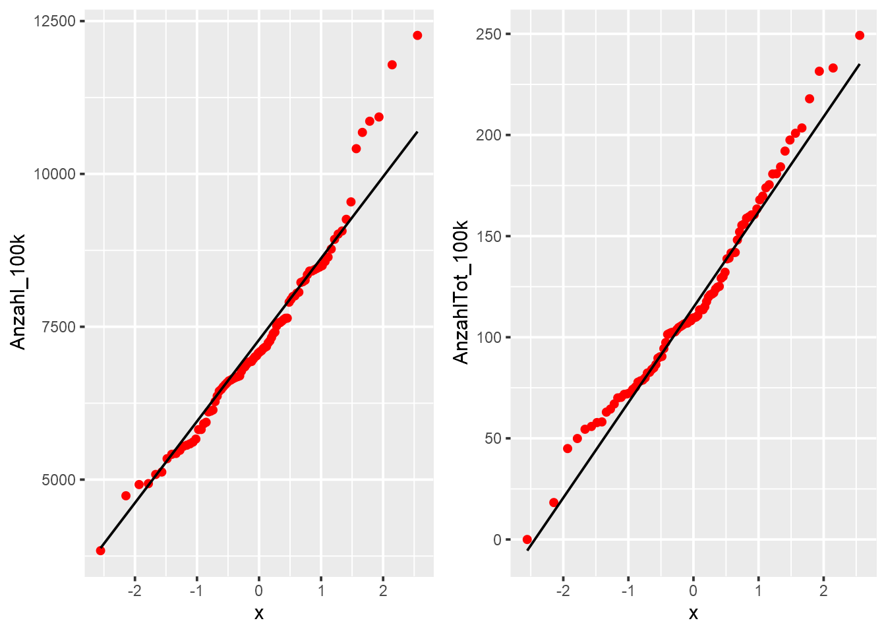
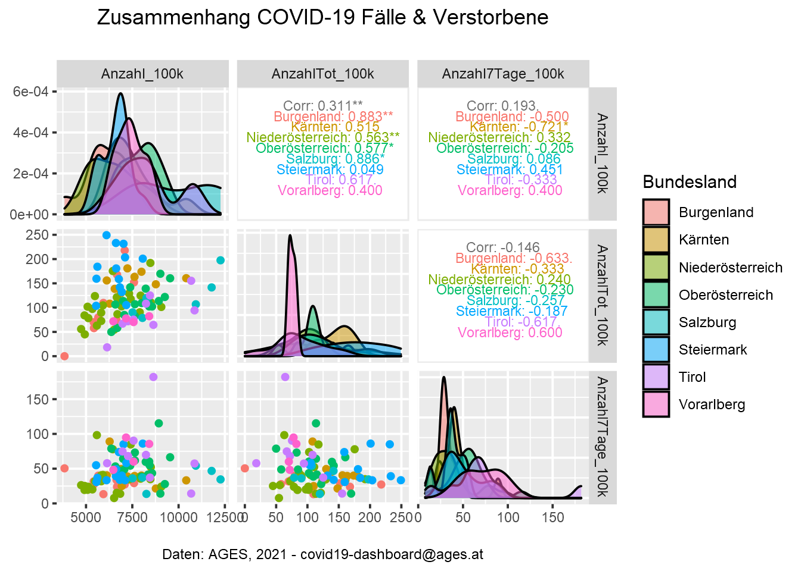
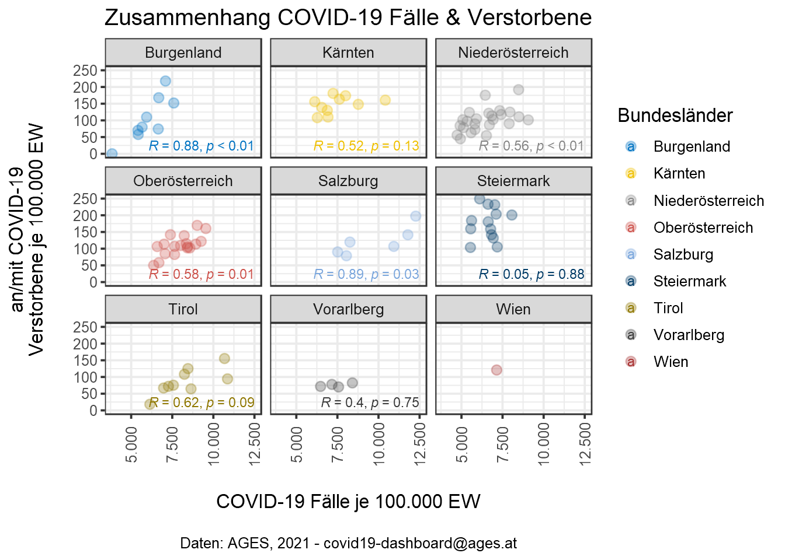
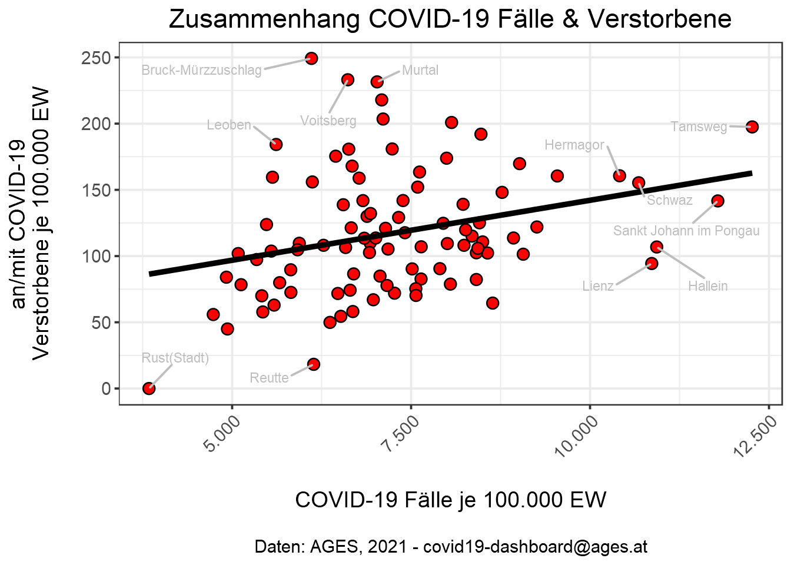
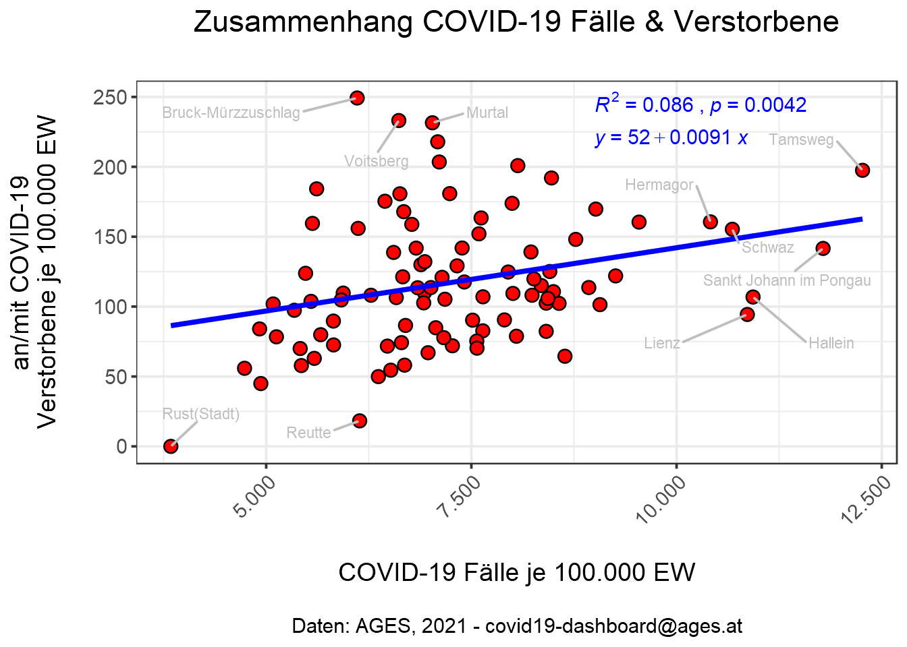
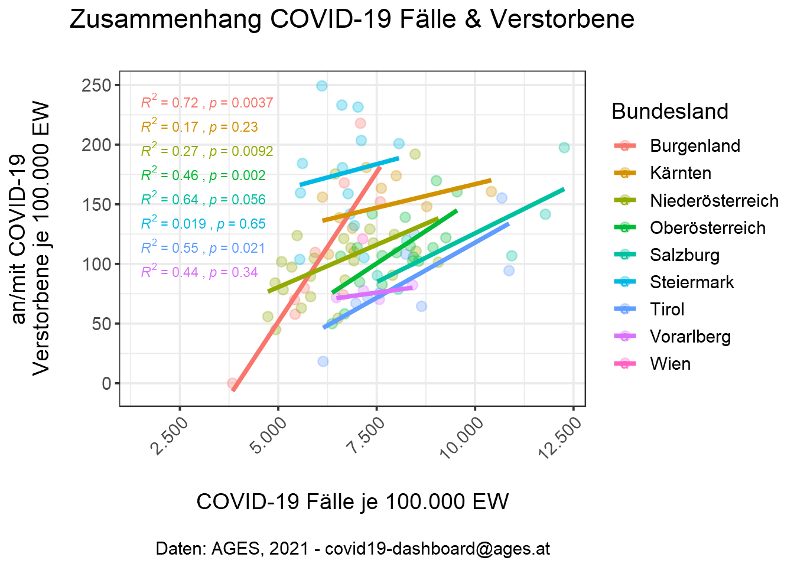
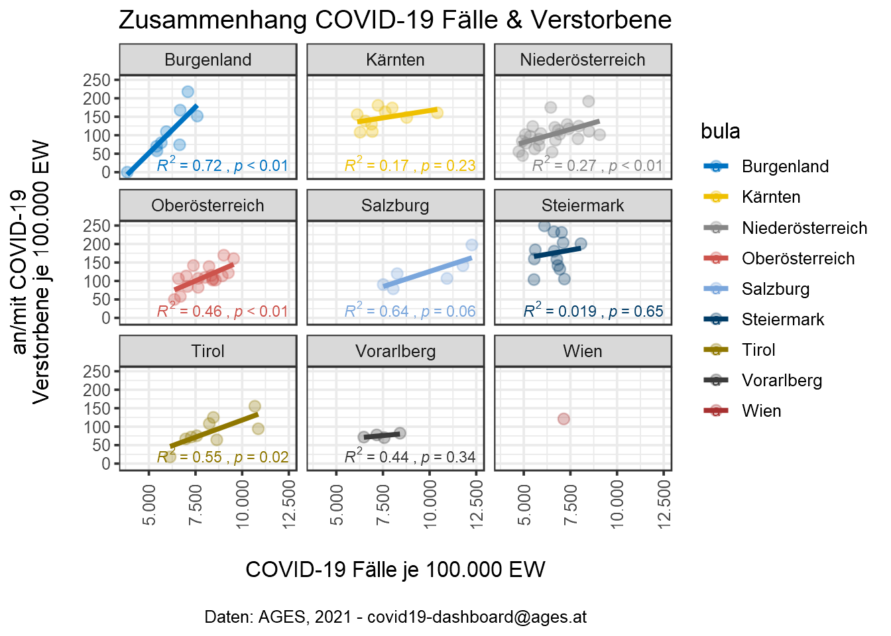

<!DOCTYPE html>
<html lang="" xml:lang="">
<head>

  <meta charset="utf-8" />
  <meta http-equiv="X-UA-Compatible" content="IE=edge" />
  <title>10 Zusammenhänge zwischen zwei metrischen Variablen | How 2 do Things with Numbers (SS 2022)</title>
  <meta name="description" content="10 Zusammenhänge zwischen zwei metrischen Variablen | How 2 do Things with Numbers (SS 2022)" />
  <meta name="generator" content="bookdown 0.24 and GitBook 2.6.7" />

  <meta property="og:title" content="10 Zusammenhänge zwischen zwei metrischen Variablen | How 2 do Things with Numbers (SS 2022)" />
  <meta property="og:type" content="book" />
  
  
  
  

  <meta name="twitter:card" content="summary" />
  <meta name="twitter:title" content="10 Zusammenhänge zwischen zwei metrischen Variablen | How 2 do Things with Numbers (SS 2022)" />
  
  
  

<meta name="author" content="Kami Höferl | https://orcid.org/0000-0002-5397-180X" />


  <meta name="viewport" content="width=device-width, initial-scale=1" />
  <meta name="apple-mobile-web-app-capable" content="yes" />
  <meta name="apple-mobile-web-app-status-bar-style" content="black" />
  
  
<link rel="prev" href="09_deskriptive_statistik_metrisch.html"/>
<link rel="next" href="11_gruppenunterschiede_v2.html"/>
<script src="libs/header-attrs-2.12/header-attrs.js"></script>
<script src="libs/jquery-3.6.0/jquery-3.6.0.min.js"></script>
<script src="https://cdn.jsdelivr.net/npm/fuse.js@6.4.6/dist/fuse.min.js"></script>
<link href="libs/gitbook-2.6.7/css/style.css" rel="stylesheet" />
<link href="libs/gitbook-2.6.7/css/plugin-table.css" rel="stylesheet" />
<link href="libs/gitbook-2.6.7/css/plugin-bookdown.css" rel="stylesheet" />
<link href="libs/gitbook-2.6.7/css/plugin-highlight.css" rel="stylesheet" />
<link href="libs/gitbook-2.6.7/css/plugin-search.css" rel="stylesheet" />
<link href="libs/gitbook-2.6.7/css/plugin-fontsettings.css" rel="stylesheet" />
<link href="libs/gitbook-2.6.7/css/plugin-clipboard.css" rel="stylesheet" />


<link href="libs/anchor-sections-1.1.0/anchor-sections.css" rel="stylesheet" />
<link href="libs/anchor-sections-1.1.0/anchor-sections-hash.css" rel="stylesheet" />
<script src="libs/anchor-sections-1.1.0/anchor-sections.js"></script>
<html>

  <head>
  <script>
    window.addEventListener("load", () => {
        const enabled = document.querySelectorAll(".fullscreen-enabled");
        for (let i = 0; i < enabled.length; i++) {
            enabled[i].style.cursor = "pointer";
            enabled[i].onclick = () => {
                enabled[i].requestFullscreen();
            };
        }
    });
  </script>
  </head>

  <body>
  <!-- body content here -->
  </body>

</html>


<style type="text/css">
pre > code.sourceCode { white-space: pre; position: relative; }
pre > code.sourceCode > span { display: inline-block; line-height: 1.25; }
pre > code.sourceCode > span:empty { height: 1.2em; }
.sourceCode { overflow: visible; }
code.sourceCode > span { color: inherit; text-decoration: inherit; }
pre.sourceCode { margin: 0; }
@media screen {
div.sourceCode { overflow: auto; }
}
@media print {
pre > code.sourceCode { white-space: pre-wrap; }
pre > code.sourceCode > span { text-indent: -5em; padding-left: 5em; }
}
pre.numberSource code
  { counter-reset: source-line 0; }
pre.numberSource code > span
  { position: relative; left: -4em; counter-increment: source-line; }
pre.numberSource code > span > a:first-child::before
  { content: counter(source-line);
    position: relative; left: -1em; text-align: right; vertical-align: baseline;
    border: none; display: inline-block;
    -webkit-touch-callout: none; -webkit-user-select: none;
    -khtml-user-select: none; -moz-user-select: none;
    -ms-user-select: none; user-select: none;
    padding: 0 4px; width: 4em;
    color: #aaaaaa;
  }
pre.numberSource { margin-left: 3em; border-left: 1px solid #aaaaaa;  padding-left: 4px; }
div.sourceCode
  {   }
@media screen {
pre > code.sourceCode > span > a:first-child::before { text-decoration: underline; }
}
code span.al { color: #ff0000; font-weight: bold; } /* Alert */
code span.an { color: #60a0b0; font-weight: bold; font-style: italic; } /* Annotation */
code span.at { color: #7d9029; } /* Attribute */
code span.bn { color: #40a070; } /* BaseN */
code span.bu { } /* BuiltIn */
code span.cf { color: #007020; font-weight: bold; } /* ControlFlow */
code span.ch { color: #4070a0; } /* Char */
code span.cn { color: #880000; } /* Constant */
code span.co { color: #60a0b0; font-style: italic; } /* Comment */
code span.cv { color: #60a0b0; font-weight: bold; font-style: italic; } /* CommentVar */
code span.do { color: #ba2121; font-style: italic; } /* Documentation */
code span.dt { color: #902000; } /* DataType */
code span.dv { color: #40a070; } /* DecVal */
code span.er { color: #ff0000; font-weight: bold; } /* Error */
code span.ex { } /* Extension */
code span.fl { color: #40a070; } /* Float */
code span.fu { color: #06287e; } /* Function */
code span.im { } /* Import */
code span.in { color: #60a0b0; font-weight: bold; font-style: italic; } /* Information */
code span.kw { color: #007020; font-weight: bold; } /* Keyword */
code span.op { color: #666666; } /* Operator */
code span.ot { color: #007020; } /* Other */
code span.pp { color: #bc7a00; } /* Preprocessor */
code span.sc { color: #4070a0; } /* SpecialChar */
code span.ss { color: #bb6688; } /* SpecialString */
code span.st { color: #4070a0; } /* String */
code span.va { color: #19177c; } /* Variable */
code span.vs { color: #4070a0; } /* VerbatimString */
code span.wa { color: #60a0b0; font-weight: bold; font-style: italic; } /* Warning */
</style>

<style type="text/css">
/* Used with Pandoc 2.11+ new --citeproc when CSL is used */
div.csl-bib-body { }
div.csl-entry {
  clear: both;
}
.hanging div.csl-entry {
  margin-left:2em;
  text-indent:-2em;
}
div.csl-left-margin {
  min-width:2em;
  float:left;
}
div.csl-right-inline {
  margin-left:2em;
  padding-left:1em;
}
div.csl-indent {
  margin-left: 2em;
}
</style>

<link rel="stylesheet" href="style.css" type="text/css" />
</head>

<body>


  <div class="book without-animation with-summary font-size-2 font-family-1" data-basepath=".">

    <div class="book-summary">
      <nav role="navigation">

<ul class="summary">
<li><a href="index.html#howdy">Howdy<span></span></a></li>
<li class="chapter" data-level="1" data-path="01_syllabus.html"><a href="01_syllabus.html"><i class="fa fa-check"></i><b>1</b> Ouvertüre (aka “Syllabus”)<span></span></a>
<ul>
<li class="chapter" data-level="1.1" data-path="01_syllabus.html"><a href="01_syllabus.html#lernziele"><i class="fa fa-check"></i><b>1.1</b> Lernziele<span></span></a></li>
<li class="chapter" data-level="1.2" data-path="01_syllabus.html"><a href="01_syllabus.html#zeitplanung"><i class="fa fa-check"></i><b>1.2</b> Zeitplanung<span></span></a></li>
<li class="chapter" data-level="1.3" data-path="01_syllabus.html"><a href="01_syllabus.html#rulez-of-the-game"><i class="fa fa-check"></i><b>1.3</b> Rulez of the Game<span></span></a></li>
<li class="chapter" data-level="1.4" data-path="01_syllabus.html"><a href="01_syllabus.html#übungsteile"><i class="fa fa-check"></i><b>1.4</b> Übungsteile<span></span></a></li>
<li class="chapter" data-level="1.5" data-path="01_syllabus.html"><a href="01_syllabus.html#bewertungskriterien"><i class="fa fa-check"></i><b>1.5</b> Bewertungskriterien<span></span></a></li>
<li class="chapter" data-level="1.6" data-path="01_syllabus.html"><a href="01_syllabus.html#formelles-zu-den-übungsarbeiten"><i class="fa fa-check"></i><b>1.6</b> Formelles zu den Übungsarbeiten<span></span></a></li>
<li class="chapter" data-level="1.7" data-path="01_syllabus.html"><a href="01_syllabus.html#empfehlung-zur-eingesetzten-software"><i class="fa fa-check"></i><b>1.7</b> Empfehlung zur eingesetzten Software<span></span></a></li>
<li class="chapter" data-level="1.8" data-path="01_syllabus.html"><a href="01_syllabus.html#ausgewählte-hilfestellungen-zum-thema-r-und-rstudio"><i class="fa fa-check"></i><b>1.8</b> Ausgewählte Hilfestellungen zum Thema R und RStudio<span></span></a></li>
<li class="chapter" data-level="1.9" data-path="01_syllabus.html"><a href="01_syllabus.html#literatur"><i class="fa fa-check"></i><b>1.9</b> Literatur zur Lehrveranstaltung<span></span></a></li>
</ul></li>
<li class="chapter" data-level="2" data-path="02_forschungsprozess.html"><a href="02_forschungsprozess.html"><i class="fa fa-check"></i><b>2</b> Wege zum empirischen Forschen<span></span></a>
<ul>
<li><a href="02_forschungsprozess.html#zielsetzung-dieser-einheit">📢 Zielsetzung dieser Einheit<span></span></a></li>
<li class="chapter" data-level="2.1" data-path="02_forschungsprozess.html"><a href="02_forschungsprozess.html#wozu-empirie"><i class="fa fa-check"></i><b>2.1</b> Wozu Empirie?<span></span></a></li>
<li class="chapter" data-level="2.2" data-path="02_forschungsprozess.html"><a href="02_forschungsprozess.html#aber-wie"><i class="fa fa-check"></i><b>2.2</b> Aber wie?<span></span></a></li>
<li class="chapter" data-level="2.3" data-path="02_forschungsprozess.html"><a href="02_forschungsprozess.html#hauptsache-daten"><i class="fa fa-check"></i><b>2.3</b> Hauptsache Daten?<span></span></a></li>
</ul></li>
<li class="chapter" data-level="3" data-path="03_messen.html"><a href="03_messen.html"><i class="fa fa-check"></i><b>3</b> Warmup: Messen und Skalen<span></span></a>
<ul>
<li><a href="03_messen.html#zielsetzung-dieser-einheit-1">📢 Zielsetzung dieser Einheit<span></span></a></li>
<li class="chapter" data-level="3.1" data-path="03_messen.html"><a href="03_messen.html#was-passiert-beim-messen"><i class="fa fa-check"></i><b>3.1</b> Was passiert beim Messen?<span></span></a></li>
<li class="chapter" data-level="3.2" data-path="03_messen.html"><a href="03_messen.html#skalenniveaus-reloaded"><i class="fa fa-check"></i><b>3.2</b> Skalenniveaus (reloaded)<span></span></a></li>
</ul></li>
<li class="chapter" data-level="4" data-path="04_messen_primaer_sekundaerdaten.html"><a href="04_messen_primaer_sekundaerdaten.html"><i class="fa fa-check"></i><b>4</b> Sekundärdaten gewinnen<span></span></a>
<ul>
<li><a href="04_messen_primaer_sekundaerdaten.html#zielsetzung-dieser-einheit-2">📢 Zielsetzung dieser Einheit<span></span></a></li>
<li class="chapter" data-level="4.1" data-path="04_messen_primaer_sekundaerdaten.html"><a href="04_messen_primaer_sekundaerdaten.html#sekundär-daten-gewinnen"><i class="fa fa-check"></i><b>4.1</b> (Sekundär-)Daten gewinnen<span></span></a>
<ul>
<li class="chapter" data-level="4.1.1" data-path="04_messen_primaer_sekundaerdaten.html"><a href="04_messen_primaer_sekundaerdaten.html#ein-technischer-aspekt-der-gewinnung-von-sekundärdaten"><i class="fa fa-check"></i><b>4.1.1</b> Ein technischer Aspekt der Gewinnung von Sekundärdaten<span></span></a></li>
</ul></li>
<li class="chapter" data-level="4.2" data-path="04_messen_primaer_sekundaerdaten.html"><a href="04_messen_primaer_sekundaerdaten.html#zur-qualität-von-sekundärdaten"><i class="fa fa-check"></i><b>4.2</b> Zur Qualität von Sekundärdaten<span></span></a></li>
<li class="chapter" data-level="4.3" data-path="04_messen_primaer_sekundaerdaten.html"><a href="04_messen_primaer_sekundaerdaten.html#sekundärdaten-als-open-data-nutzen-können"><i class="fa fa-check"></i><b>4.3</b> Sekundärdaten als “Open Data” nutzen (können)<span></span></a></li>
</ul></li>
<li class="chapter" data-level="5" data-path="05_primaererhebung.html"><a href="05_primaererhebung.html"><i class="fa fa-check"></i><b>5</b> Primärdaten gewinnen<span></span></a>
<ul>
<li><a href="05_primaererhebung.html#zielsetzung-dieser-einheit-3">📢 Zielsetzung dieser Einheit<span></span></a></li>
<li class="chapter" data-level="5.1" data-path="05_primaererhebung.html"><a href="05_primaererhebung.html#nicht-rekative-verfahren"><i class="fa fa-check"></i><b>5.1</b> Nicht-rekative Verfahren<span></span></a></li>
<li class="chapter" data-level="5.2" data-path="05_primaererhebung.html"><a href="05_primaererhebung.html#beobachtungen"><i class="fa fa-check"></i><b>5.2</b> Beobachtungen<span></span></a></li>
<li class="chapter" data-level="5.3" data-path="05_primaererhebung.html"><a href="05_primaererhebung.html#befragungen"><i class="fa fa-check"></i><b>5.3</b> Befragungen<span></span></a></li>
<li class="chapter" data-level="5.4" data-path="05_primaererhebung.html"><a href="05_primaererhebung.html#special-die-stichprobenziehung"><i class="fa fa-check"></i><b>5.4</b> Special: Die Stichprobenziehung<span></span></a></li>
</ul></li>
<li class="chapter" data-level="6" data-path="06_basics_datananalyse.html"><a href="06_basics_datananalyse.html"><i class="fa fa-check"></i><b>6</b> Die Basics zur Datenanalyse<span></span></a>
<ul>
<li><a href="06_basics_datananalyse.html#zielsetzung-dieser-einheit-4">📢 Zielsetzung dieser Einheit<span></span></a></li>
<li class="chapter" data-level="6.1" data-path="06_basics_datananalyse.html"><a href="06_basics_datananalyse.html#daten-analysieren---aber-wie"><i class="fa fa-check"></i><b>6.1</b> Daten analysieren - aber wie?<span></span></a></li>
<li class="chapter" data-level="6.2" data-path="06_basics_datananalyse.html"><a href="06_basics_datananalyse.html#die-hilfsmittel-r-rstudio"><i class="fa fa-check"></i><b>6.2</b> Die Hilfsmittel R &amp; RStudio<span></span></a></li>
<li class="chapter" data-level="6.3" data-path="06_basics_datananalyse.html"><a href="06_basics_datananalyse.html#grundlegende-datenstrukturen-in-r"><i class="fa fa-check"></i><b>6.3</b> Grundlegende Datenstrukturen in R<span></span></a></li>
<li class="chapter" data-level="6.4" data-path="06_basics_datananalyse.html"><a href="06_basics_datananalyse.html#daten-im--und-exportieren"><i class="fa fa-check"></i><b>6.4</b> Daten im- und exportieren<span></span></a>
<ul>
<li class="chapter" data-level="6.4.1" data-path="06_basics_datananalyse.html"><a href="06_basics_datananalyse.html#der-datenimport"><i class="fa fa-check"></i><b>6.4.1</b> Der Datenimport<span></span></a></li>
<li class="chapter" data-level="6.4.2" data-path="06_basics_datananalyse.html"><a href="06_basics_datananalyse.html#der-datenexport"><i class="fa fa-check"></i><b>6.4.2</b> Der Datenexport<span></span></a></li>
</ul></li>
</ul></li>
<li class="chapter" data-level="7" data-path="07_n_kategoriale_variablen.html"><a href="07_n_kategoriale_variablen.html"><i class="fa fa-check"></i><b>7</b> Die Häufigkeitsanalyse kategorialer Daten<span></span></a>
<ul>
<li><a href="07_n_kategoriale_variablen.html#zielsetzung-dieser-einheit-5">📢 Zielsetzung dieser Einheit<span></span></a></li>
<li class="chapter" data-level="7.1" data-path="07_n_kategoriale_variablen.html"><a href="07_n_kategoriale_variablen.html#katdatasetup"><i class="fa fa-check"></i><b>7.1</b> Kategoriale Daten auswerten<span></span></a></li>
<li class="chapter" data-level="7.2" data-path="07_n_kategoriale_variablen.html"><a href="07_n_kategoriale_variablen.html#vorbereitendes"><i class="fa fa-check"></i><b>7.2</b> Vorbereitendes<span></span></a></li>
<li class="chapter" data-level="7.3" data-path="07_n_kategoriale_variablen.html"><a href="07_n_kategoriale_variablen.html#katdatamanipul"><i class="fa fa-check"></i><b>7.3</b> Der Datenimport, die Datenaufbereitung und -validierung<span></span></a></li>
<li class="chapter" data-level="7.4" data-path="07_n_kategoriale_variablen.html"><a href="07_n_kategoriale_variablen.html#die-häufikgeitsanalyse-einer-variablen"><i class="fa fa-check"></i><b>7.4</b> Die Häufikgeitsanalyse einer Variablen<span></span></a></li>
<li class="chapter" data-level="7.5" data-path="07_n_kategoriale_variablen.html"><a href="07_n_kategoriale_variablen.html#katdatabivarn"><i class="fa fa-check"></i><b>7.5</b> Die Häufigkeitsanalyse zweier kategorialer Variablen<span></span></a></li>
</ul></li>
<li class="chapter" data-level="8" data-path="08_zusammenhaenge_kategoriale_variablen.html"><a href="08_zusammenhaenge_kategoriale_variablen.html"><i class="fa fa-check"></i><b>8</b> Zusammenhänge zwischen kategorialen Variablen<span></span></a>
<ul>
<li><a href="08_zusammenhaenge_kategoriale_variablen.html#zielsetzung-dieser-einheit-6">📢 Zielsetzung dieser Einheit<span></span></a></li>
<li class="chapter" data-level="8.1" data-path="08_zusammenhaenge_kategoriale_variablen.html"><a href="08_zusammenhaenge_kategoriale_variablen.html#die-ausgangslage"><i class="fa fa-check"></i><b>8.1</b> Die Ausgangslage<span></span></a></li>
<li class="chapter" data-level="8.2" data-path="08_zusammenhaenge_kategoriale_variablen.html"><a href="08_zusammenhaenge_kategoriale_variablen.html#zusammenhänge-zwischen-zwei-kategorialen-variablen-messen---die-theorie"><i class="fa fa-check"></i><b>8.2</b> Zusammenhänge zwischen zwei kategorialen Variablen messen - die Theorie<span></span></a></li>
<li class="chapter" data-level="8.3" data-path="08_zusammenhaenge_kategoriale_variablen.html"><a href="08_zusammenhaenge_kategoriale_variablen.html#überprüfung-des-zusammenhangs-zwischen-politischer-orientierung-und-angemessenheit-des-pandemiemanagements"><i class="fa fa-check"></i><b>8.3</b> Überprüfung des Zusammenhangs zwischen politischer Orientierung und Angemessenheit des Pandemiemanagements<span></span></a></li>
<li class="chapter" data-level="8.4" data-path="08_zusammenhaenge_kategoriale_variablen.html"><a href="08_zusammenhaenge_kategoriale_variablen.html#charakterisierung-des-zusammenhang-mittels-der-pearson-residuen"><i class="fa fa-check"></i><b>8.4</b> Charakterisierung des Zusammenhang mittels der Pearson Residuen<span></span></a></li>
<li class="chapter" data-level="8.5" data-path="08_zusammenhaenge_kategoriale_variablen.html"><a href="08_zusammenhaenge_kategoriale_variablen.html#beurteilung-der-stärke-des-zusammenhangs-mit-cramers-v"><i class="fa fa-check"></i><b>8.5</b> Beurteilung der Stärke des Zusammenhangs mit Cramers V<span></span></a></li>
</ul></li>
<li class="chapter" data-level="9" data-path="09_deskriptive_statistik_metrisch.html"><a href="09_deskriptive_statistik_metrisch.html"><i class="fa fa-check"></i><b>9</b> Deskriptive Statistik für metrische Daten<span></span></a>
<ul>
<li><a href="09_deskriptive_statistik_metrisch.html#zielsetzung-dieser-einheit-7">📢 Zielsetzung dieser Einheit<span></span></a></li>
<li class="chapter" data-level="9.1" data-path="09_deskriptive_statistik_metrisch.html"><a href="09_deskriptive_statistik_metrisch.html#ausgangDeskriptivMetrisch"><i class="fa fa-check"></i><b>9.1</b> Die Ausgangslage<span></span></a></li>
<li class="chapter" data-level="9.2" data-path="09_deskriptive_statistik_metrisch.html"><a href="09_deskriptive_statistik_metrisch.html#der-datenimport-die-datenaufbereitung-und--validierung"><i class="fa fa-check"></i><b>9.2</b> Der Datenimport, die Datenaufbereitung und -validierung<span></span></a></li>
<li class="chapter" data-level="9.3" data-path="09_deskriptive_statistik_metrisch.html"><a href="09_deskriptive_statistik_metrisch.html#ein-blick-auf-klassische-lage--und-streuungsparameter"><i class="fa fa-check"></i><b>9.3</b> Ein Blick auf klassische Lage- und Streuungsparameter<span></span></a></li>
<li class="chapter" data-level="9.4" data-path="09_deskriptive_statistik_metrisch.html"><a href="09_deskriptive_statistik_metrisch.html#exkurs-für-motivierte-geographinnen-räumlich-explizite-deskription"><i class="fa fa-check"></i><b>9.4</b> Exkurs für motivierte GeographInnen: Räumlich explizite Deskription<span></span></a></li>
<li class="chapter" data-level="9.5" data-path="09_deskriptive_statistik_metrisch.html"><a href="09_deskriptive_statistik_metrisch.html#lage--und-streuungsparameter-graphisch-darstellen"><i class="fa fa-check"></i><b>9.5</b> Lage- und Streuungsparameter graphisch darstellen<span></span></a>
<ul>
<li class="chapter" data-level="9.5.1" data-path="09_deskriptive_statistik_metrisch.html"><a href="09_deskriptive_statistik_metrisch.html#histogramme"><i class="fa fa-check"></i><b>9.5.1</b> <strong>Histogramme</strong><span></span></a></li>
<li class="chapter" data-level="9.5.2" data-path="09_deskriptive_statistik_metrisch.html"><a href="09_deskriptive_statistik_metrisch.html#boxplots"><i class="fa fa-check"></i><b>9.5.2</b> <strong>Boxplots</strong><span></span></a></li>
</ul></li>
<li class="chapter" data-level="9.6" data-path="09_deskriptive_statistik_metrisch.html"><a href="09_deskriptive_statistik_metrisch.html#ein-erster-blick-auf-mögliche-zusammenhänge"><i class="fa fa-check"></i><b>9.6</b> Ein erster Blick auf mögliche Zusammenhänge<span></span></a></li>
</ul></li>
<li class="chapter" data-level="10" data-path="10_metrische_zusammenhaenge.html"><a href="10_metrische_zusammenhaenge.html"><i class="fa fa-check"></i><b>10</b> Zusammenhänge zwischen zwei metrischen Variablen<span></span></a>
<ul>
<li><a href="10_metrische_zusammenhaenge.html#zielsetzung-dieser-einheit-8">📢 Zielsetzung dieser Einheit<span></span></a></li>
<li class="chapter" data-level="10.1" data-path="10_metrische_zusammenhaenge.html"><a href="10_metrische_zusammenhaenge.html#die-ausgangslage-1"><i class="fa fa-check"></i><b>10.1</b> Die Ausgangslage<span></span></a></li>
<li class="chapter" data-level="10.2" data-path="10_metrische_zusammenhaenge.html"><a href="10_metrische_zusammenhaenge.html#datenimport-und--aufbereitung"><i class="fa fa-check"></i><b>10.2</b> Datenimport und -aufbereitung<span></span></a></li>
<li class="chapter" data-level="10.3" data-path="10_metrische_zusammenhaenge.html"><a href="10_metrische_zusammenhaenge.html#den-zusammenhang-graphisch-erkunden"><i class="fa fa-check"></i><b>10.3</b> Den Zusammenhang graphisch erkunden<span></span></a></li>
<li class="chapter" data-level="10.4" data-path="10_metrische_zusammenhaenge.html"><a href="10_metrische_zusammenhaenge.html#den-zusammenhang-numerisch-abbilden"><i class="fa fa-check"></i><b>10.4</b> Den Zusammenhang numerisch abbilden<span></span></a>
<ul>
<li class="chapter" data-level="10.4.1" data-path="10_metrische_zusammenhaenge.html"><a href="10_metrische_zusammenhaenge.html#überprüfung-der-normalverteilung"><i class="fa fa-check"></i><b>10.4.1</b> Überprüfung der Normalverteilung<span></span></a></li>
<li class="chapter" data-level="10.4.2" data-path="10_metrische_zusammenhaenge.html"><a href="10_metrische_zusammenhaenge.html#messung-des-zusammenhangs-zwischen-covid-erkrankungen-und-todesfällen-mittels-rangkorrelation"><i class="fa fa-check"></i><b>10.4.2</b> Messung des Zusammenhangs zwischen COVID Erkrankungen und Todesfällen mittels Rangkorrelation<span></span></a></li>
<li class="chapter" data-level="10.4.3" data-path="10_metrische_zusammenhaenge.html"><a href="10_metrische_zusammenhaenge.html#messung-des-zusammenhangs-zwischen-covid-erkrankungen-und-todesfällen-mittels-des-korrelationskoeffizienten-nach-pearson"><i class="fa fa-check"></i><b>10.4.3</b> Messung des Zusammenhangs zwischen COVID Erkrankungen und Todesfällen mittels des Korrelationskoeffizienten nach Pearson<span></span></a></li>
<li class="chapter" data-level="10.4.4" data-path="10_metrische_zusammenhaenge.html"><a href="10_metrische_zusammenhaenge.html#ermittlung-der-bundeslandspezifischen-rangkorrelationskoeffizienten"><i class="fa fa-check"></i><b>10.4.4</b> Ermittlung der bundeslandspezifischen Rangkorrelationskoeffizienten<span></span></a></li>
</ul></li>
<li class="chapter" data-level="10.5" data-path="10_metrische_zusammenhaenge.html"><a href="10_metrische_zusammenhaenge.html#lineare-regression-als-alternativer-zugang"><i class="fa fa-check"></i><b>10.5</b> Lineare Regression als alternativer Zugang<span></span></a></li>
<li class="chapter" data-level="10.6" data-path="10_metrische_zusammenhaenge.html"><a href="10_metrische_zusammenhaenge.html#konklusio"><i class="fa fa-check"></i><b>10.6</b> Konklusio<span></span></a></li>
</ul></li>
<li class="chapter" data-level="11" data-path="11_gruppenunterschiede_v2.html"><a href="11_gruppenunterschiede_v2.html"><i class="fa fa-check"></i><b>11</b> Gruppenunterschiede erforschen<span></span></a>
<ul>
<li><a href="11_gruppenunterschiede_v2.html#zielsetzung-dieser-einheit-9">📢 Zielsetzung dieser Einheit<span></span></a></li>
<li class="chapter" data-level="11.1" data-path="11_gruppenunterschiede_v2.html"><a href="11_gruppenunterschiede_v2.html#die-ausgangslage-2"><i class="fa fa-check"></i><b>11.1</b> Die Ausgangslage<span></span></a></li>
<li class="chapter" data-level="11.2" data-path="11_gruppenunterschiede_v2.html"><a href="11_gruppenunterschiede_v2.html#datenimport-und--aufbereitung-1"><i class="fa fa-check"></i><b>11.2</b> Datenimport und -aufbereitung<span></span></a></li>
<li class="chapter" data-level="11.3" data-path="11_gruppenunterschiede_v2.html"><a href="11_gruppenunterschiede_v2.html#vorbereitende-überlegungen"><i class="fa fa-check"></i><b>11.3</b> Vorbereitende Überlegungen<span></span></a>
<ul>
<li class="chapter" data-level="11.3.1" data-path="11_gruppenunterschiede_v2.html"><a href="11_gruppenunterschiede_v2.html#ermitteln-des-passenden-verfahrens"><i class="fa fa-check"></i><b>11.3.1</b> Ermitteln des passenden Verfahrens<span></span></a></li>
</ul></li>
<li class="chapter" data-level="11.4" data-path="11_gruppenunterschiede_v2.html"><a href="11_gruppenunterschiede_v2.html#gruppenunterschiede-bei-normalverteilten-variablen-mittels-varianzanalyse-untersuchen"><i class="fa fa-check"></i><b>11.4</b> Gruppenunterschiede bei normalverteilten Variablen mittels Varianzanalyse untersuchen<span></span></a>
<ul>
<li class="chapter" data-level="11.4.1" data-path="11_gruppenunterschiede_v2.html"><a href="11_gruppenunterschiede_v2.html#welch"><i class="fa fa-check"></i><b>11.4.1</b> Gruppenunterschiede bei Variablen mit Varianzheterogenität erkunden<span></span></a></li>
</ul></li>
<li class="chapter" data-level="11.5" data-path="11_gruppenunterschiede_v2.html"><a href="11_gruppenunterschiede_v2.html#gruppenunterschiede-bei-ordinalen-oder-nicht-normalverteilten-variablen"><i class="fa fa-check"></i><b>11.5</b> Gruppenunterschiede bei ordinalen oder nicht normalverteilten Variablen<span></span></a>
<ul>
<li class="chapter" data-level="11.5.1" data-path="11_gruppenunterschiede_v2.html"><a href="11_gruppenunterschiede_v2.html#vorbereitendes-1"><i class="fa fa-check"></i><b>11.5.1</b> Vorbereitendes<span></span></a></li>
<li class="chapter" data-level="11.5.2" data-path="11_gruppenunterschiede_v2.html"><a href="11_gruppenunterschiede_v2.html#eine-erster-blick-auf-die-politischen-gruppen-und-deren-sorge-vor-einer-ansteckung"><i class="fa fa-check"></i><b>11.5.2</b> Eine erster Blick auf die politischen Gruppen und deren Sorge vor einer Ansteckung<span></span></a></li>
<li class="chapter" data-level="11.5.3" data-path="11_gruppenunterschiede_v2.html"><a href="11_gruppenunterschiede_v2.html#gruppenunterschieden-mit-dem-kruskal-wallis-test-nachgehen"><i class="fa fa-check"></i><b>11.5.3</b> Gruppenunterschieden mit dem Kruskal-Wallis-Test nachgehen<span></span></a></li>
</ul></li>
</ul></li>
<li class="chapter" data-level="12" data-path="666_lit.html"><a href="666_lit.html"><i class="fa fa-check"></i><b>12</b> Quellen<span></span></a></li>
<li class="chapter" data-level="13" data-path="80_athome1.html"><a href="80_athome1.html"><i class="fa fa-check"></i><b>13</b> @Home1: Einen Fragebogen in Limesurvey umsetzen<span></span></a>
<ul>
<li><a href="80_athome1.html#zielsetzung">📢 Zielsetzung<span></span></a></li>
<li class="chapter" data-level="13.1" data-path="80_athome1.html"><a href="80_athome1.html#ausgangslage"><i class="fa fa-check"></i><b>13.1</b> Ausgangslage<span></span></a></li>
<li class="chapter" data-level="13.2" data-path="80_athome1.html"><a href="80_athome1.html#aufgabenstellung"><i class="fa fa-check"></i><b>13.2</b> Aufgabenstellung<span></span></a></li>
<li class="chapter" data-level="13.3" data-path="80_athome1.html"><a href="80_athome1.html#formelles"><i class="fa fa-check"></i><b>13.3</b> Formelles<span></span></a></li>
</ul></li>
<li class="chapter" data-level="14" data-path="81_athome2.html"><a href="81_athome2.html"><i class="fa fa-check"></i><b>14</b> @Home2: Eine einfache Quotenstichprobe<span></span></a>
<ul>
<li><a href="81_athome2.html#zielsetzung-1">📢 Zielsetzung<span></span></a></li>
<li class="chapter" data-level="14.1" data-path="81_athome2.html"><a href="81_athome2.html#ausgangslage-1"><i class="fa fa-check"></i><b>14.1</b> Ausgangslage<span></span></a></li>
<li class="chapter" data-level="14.2" data-path="81_athome2.html"><a href="81_athome2.html#aufgabenstellung-1"><i class="fa fa-check"></i><b>14.2</b> Aufgabenstellung<span></span></a></li>
<li class="chapter" data-level="14.3" data-path="81_athome2.html"><a href="81_athome2.html#formelles-1"><i class="fa fa-check"></i><b>14.3</b> Formelles<span></span></a></li>
</ul></li>
<li class="chapter" data-level="15" data-path="82_athome3.html"><a href="82_athome3.html"><i class="fa fa-check"></i><b>15</b> @Home3: Zusammenhänge und Unterschiede<span></span></a>
<ul>
<li><a href="82_athome3.html#zielsetzung-2">📢 Zielsetzung<span></span></a></li>
<li class="chapter" data-level="15.1" data-path="82_athome3.html"><a href="82_athome3.html#beispiel-a-covid-19-impfungen-in-österreich"><i class="fa fa-check"></i><b>15.1</b> Beispiel A: COVID-19 Impfungen in Österreich<span></span></a></li>
<li class="chapter" data-level="15.2" data-path="82_athome3.html"><a href="82_athome3.html#beispiel-b-bundesdeutsche-wahrnehmungen-zur-covid-19-pandemie"><i class="fa fa-check"></i><b>15.2</b> Beispiel B: Bundesdeutsche Wahrnehmungen zur COVID-19 Pandemie<span></span></a></li>
<li class="chapter" data-level="15.3" data-path="82_athome3.html"><a href="82_athome3.html#formalia"><i class="fa fa-check"></i><b>15.3</b> Formalia<span></span></a>
<ul>
<li class="chapter" data-level="15.3.1" data-path="82_athome3.html"><a href="82_athome3.html#deadline-verpasst"><i class="fa fa-check"></i><b>15.3.1</b> Deadline verpasst?<span></span></a></li>
</ul></li>
</ul></li>
</ul>

      </nav>
    </div>

    <div class="book-body">
      <div class="body-inner">
        <div class="book-header" role="navigation">
          <h1>
            <i class="fa fa-circle-o-notch fa-spin"></i><a href="./">How 2 do Things with Numbers (SS 2022)</a>
          </h1>
        </div>

        <div class="page-wrapper" tabindex="-1" role="main">
          <div class="page-inner">

            <section class="normal" id="section-">
<div id="zusammenhaenge-metrisch" class="section level1 hasAnchor" number="10">
<h1><span class="header-section-number">10</span> Zusammenhänge zwischen zwei metrischen Variablen<a href="10_metrische_zusammenhaenge.html#zusammenhaenge-metrisch" class="anchor-section" aria-label="Anchor link to header"></a></h1>
<div id="zielsetzung-dieser-einheit-8" class="section level2 unnumbered hasAnchor">
<h2>📢 Zielsetzung dieser Einheit<a href="#zielsetzung-dieser-einheit-8" class="anchor-section" aria-label="Anchor link to header"></a></h2>
<p>In dieser Einheit wollen wir uns den <strong>Zusammenhängen zwischen metrischen Variablen</strong> widmen. Dazu werden wir …</p>
<ul>
<li>mittels eines <strong>Scatterplots (aka Streudiagramm)</strong> den Zusammenhang zwischen zwei Variablen graphisch erkunden;</li>
<li>mittels geeigneter <strong>Korrelationsmaße</strong> den Zusammenhang zwischen zwei Variablen numerisch bestimmen;</li>
<li>und schließlich alternativ dazu den Zusammenhang zwischen zwei Variablen mittels einer <strong>Regression</strong> messen.</li>
</ul>
<p>
<strong>tl;dr: </strong><a href="https://kamihoeferl.at/lehre/vu_sozwiss_1/10_metrische_zusammenhaenge.R" type="application/octet-stream">Her mit dem Code!</a>
</p>
</div>
<div id="die-ausgangslage-1" class="section level2 hasAnchor" number="10.1">
<h2><span class="header-section-number">10.1</span> Die Ausgangslage<a href="10_metrische_zusammenhaenge.html#die-ausgangslage-1" class="anchor-section" aria-label="Anchor link to header"></a></h2>
<p>Um herauszufinden, ob zwischen zwei metrischen Variablen ein Zusammenhang besteht, nutzen wir die aus Einheit <a href="09_deskriptive_statistik_metrisch.html#ausgangDeskriptivMetrisch">9.1</a> bekannten Beispieldaten der <a href="https://www.ages.at/startseite/">Österreichischen Agentur für Gesundheit und Ernährungssicherheit AGE</a> zu <a href="https://www.data.gv.at/katalog/dataset/2f6649b6-2b2d-49a9-ab31-6c7e43728001">COVID-19 Fällen in den politischen Bezirken Österreich</a>.</p>
<blockquote>
<p><strong>👉 Anmerkung</strong>: Wir gehen in dieser Einheit von folgender Verzeichnisstruktur aus:</p>
</blockquote>
<pre><code>**Projektfolder**
| skript_1.R
| ...
| skript_n.R    
+-- data
|     | datensatz_1.xyz
|     | ...
|     | datensatz_n.xyz
+-- output</code></pre>
<p>Inhaltlich wollen wir uns mit folgender Frage beschäftigen 🤔:</p>
<p>Besteht zwischen der <strong>Anzahl an COVID-19 Erkrankten</strong> und der an/mit <strong>COVID-19 Verstorbenen</strong> auf Ebene der Bezirke ein <strong>Zusammenhang</strong>?</p>
<p>Dieser Frage wollen wir uns zunächst über einen <a href="https://de.wikipedia.org/wiki/Streudiagramm">Scatterplot</a> annähern und danach mögliche Zusammenhänge numerisch beschreiben.</p>
</div>
<div id="datenimport-und--aufbereitung" class="section level2 hasAnchor" number="10.2">
<h2><span class="header-section-number">10.2</span> Datenimport und -aufbereitung<a href="10_metrische_zusammenhaenge.html#datenimport-und--aufbereitung" class="anchor-section" aria-label="Anchor link to header"></a></h2>
<p>Bevor wir uns der Erkundung des möglichen Zusammenhangs widmen können, müssen wir zunächst</p>
<ul>
<li>die AGES-Rohdaten <strong>importieren</strong></li>
<li>eine <strong>Normierung</strong> der Daten vornehmen (Variablen “…_100k”)</li>
<li>und die <strong>Bundeslandzugehörigkeit</strong> der Bezirke (Variable “bula”) ermitteln.</li>
</ul>
<p>Un damit kommen wir zu Folgendem:</p>
<div class="sourceCode" id="cb132"><pre class="sourceCode r"><code class="sourceCode r"><span id="cb132-1"><a href="10_metrische_zusammenhaenge.html#cb132-1" aria-hidden="true" tabindex="-1"></a><span class="fu">library</span>(tidyverse)</span>
<span id="cb132-2"><a href="10_metrische_zusammenhaenge.html#cb132-2" aria-hidden="true" tabindex="-1"></a><span class="fu">library</span>(scales)</span>
<span id="cb132-3"><a href="10_metrische_zusammenhaenge.html#cb132-3" aria-hidden="true" tabindex="-1"></a><span class="fu">library</span>(ggrepel)</span>
<span id="cb132-4"><a href="10_metrische_zusammenhaenge.html#cb132-4" aria-hidden="true" tabindex="-1"></a></span>
<span id="cb132-5"><a href="10_metrische_zusammenhaenge.html#cb132-5" aria-hidden="true" tabindex="-1"></a>agesRohdaten <span class="ot">&lt;-</span> <span class="fu">read.csv2</span>(<span class="st">&quot;data/agesRohdaten_25-05-21.csv&quot;</span>, <span class="at">encoding =</span> <span class="st">&quot;UTF-8&quot;</span>) <span class="sc">%&gt;%</span></span>
<span id="cb132-6"><a href="10_metrische_zusammenhaenge.html#cb132-6" aria-hidden="true" tabindex="-1"></a>  <span class="fu">as_tibble</span>()</span>
<span id="cb132-7"><a href="10_metrische_zusammenhaenge.html#cb132-7" aria-hidden="true" tabindex="-1"></a>covidCases <span class="ot">&lt;-</span> agesRohdaten <span class="sc">%&gt;%</span></span>
<span id="cb132-8"><a href="10_metrische_zusammenhaenge.html#cb132-8" aria-hidden="true" tabindex="-1"></a>  <span class="fu">mutate</span>(<span class="at">Anzahl_100k =</span> Anzahl<span class="sc">/</span>(AnzEinwohner<span class="sc">/</span><span class="dv">100000</span>),</span>
<span id="cb132-9"><a href="10_metrische_zusammenhaenge.html#cb132-9" aria-hidden="true" tabindex="-1"></a>         <span class="at">AnzahlTot_100k =</span> AnzahlTot<span class="sc">/</span>(AnzEinwohner<span class="sc">/</span><span class="dv">100000</span>),</span>
<span id="cb132-10"><a href="10_metrische_zusammenhaenge.html#cb132-10" aria-hidden="true" tabindex="-1"></a>         <span class="at">Anzahl7Tage_100k =</span> AnzahlFaelle7Tage<span class="sc">/</span>(AnzEinwohner<span class="sc">/</span><span class="dv">100000</span>))</span>
<span id="cb132-11"><a href="10_metrische_zusammenhaenge.html#cb132-11" aria-hidden="true" tabindex="-1"></a>covidCases <span class="ot">&lt;-</span> covidCases <span class="sc">%&gt;%</span></span>
<span id="cb132-12"><a href="10_metrische_zusammenhaenge.html#cb132-12" aria-hidden="true" tabindex="-1"></a>  <span class="fu">mutate</span>(<span class="at">bula =</span> <span class="fu">factor</span>(<span class="fu">floor</span>(GKZ<span class="sc">/</span><span class="dv">100</span>),</span>
<span id="cb132-13"><a href="10_metrische_zusammenhaenge.html#cb132-13" aria-hidden="true" tabindex="-1"></a>                       <span class="at">levels =</span> <span class="fu">c</span>(<span class="dv">1</span><span class="sc">:</span><span class="dv">9</span>),</span>
<span id="cb132-14"><a href="10_metrische_zusammenhaenge.html#cb132-14" aria-hidden="true" tabindex="-1"></a>                       <span class="at">labels =</span> <span class="fu">c</span>(<span class="st">&quot;Burgenland&quot;</span>,</span>
<span id="cb132-15"><a href="10_metrische_zusammenhaenge.html#cb132-15" aria-hidden="true" tabindex="-1"></a>                                  <span class="st">&quot;Kärnten&quot;</span>,</span>
<span id="cb132-16"><a href="10_metrische_zusammenhaenge.html#cb132-16" aria-hidden="true" tabindex="-1"></a>                                  <span class="st">&quot;Niederösterreich&quot;</span>,</span>
<span id="cb132-17"><a href="10_metrische_zusammenhaenge.html#cb132-17" aria-hidden="true" tabindex="-1"></a>                                  <span class="st">&quot;Oberösterreich&quot;</span>,</span>
<span id="cb132-18"><a href="10_metrische_zusammenhaenge.html#cb132-18" aria-hidden="true" tabindex="-1"></a>                                  <span class="st">&quot;Salzburg&quot;</span>,</span>
<span id="cb132-19"><a href="10_metrische_zusammenhaenge.html#cb132-19" aria-hidden="true" tabindex="-1"></a>                                  <span class="st">&quot;Steiermark&quot;</span>,</span>
<span id="cb132-20"><a href="10_metrische_zusammenhaenge.html#cb132-20" aria-hidden="true" tabindex="-1"></a>                                  <span class="st">&quot;Tirol&quot;</span>,</span>
<span id="cb132-21"><a href="10_metrische_zusammenhaenge.html#cb132-21" aria-hidden="true" tabindex="-1"></a>                                  <span class="st">&quot;Vorarlberg&quot;</span>,</span>
<span id="cb132-22"><a href="10_metrische_zusammenhaenge.html#cb132-22" aria-hidden="true" tabindex="-1"></a>                                  <span class="st">&quot;Wien&quot;</span>)</span>
<span id="cb132-23"><a href="10_metrische_zusammenhaenge.html#cb132-23" aria-hidden="true" tabindex="-1"></a>                       )</span>
<span id="cb132-24"><a href="10_metrische_zusammenhaenge.html#cb132-24" aria-hidden="true" tabindex="-1"></a>         )</span></code></pre></div>
</div>
<div id="den-zusammenhang-graphisch-erkunden" class="section level2 hasAnchor" number="10.3">
<h2><span class="header-section-number">10.3</span> Den Zusammenhang graphisch erkunden<a href="10_metrische_zusammenhaenge.html#den-zusammenhang-graphisch-erkunden" class="anchor-section" aria-label="Anchor link to header"></a></h2>
<p>Der einfachste Weg einem möglichen Zusammenhang zwischen der Anzahl der COVID-19 Erkrankungen und Todesfälle je 100.000 Einwohnern nachzugehen, ist ein <strong>Scatterplot</strong> (aka “Streudiagramm”):</p>
<div class="sourceCode" id="cb133"><pre class="sourceCode r"><code class="sourceCode r"><span id="cb133-1"><a href="10_metrische_zusammenhaenge.html#cb133-1" aria-hidden="true" tabindex="-1"></a><span class="fu">ggplot</span>(covidCases, <span class="fu">aes</span>(<span class="at">x =</span> Anzahl_100k, <span class="at">y =</span> AnzahlTot_100k)) <span class="sc">+</span></span>
<span id="cb133-2"><a href="10_metrische_zusammenhaenge.html#cb133-2" aria-hidden="true" tabindex="-1"></a>  <span class="fu">geom_point</span>(<span class="at">size =</span> <span class="dv">3</span>, <span class="at">shape=</span><span class="dv">21</span>, <span class="at">fill =</span> <span class="st">&quot;red&quot;</span>) <span class="sc">+</span></span>
<span id="cb133-3"><a href="10_metrische_zusammenhaenge.html#cb133-3" aria-hidden="true" tabindex="-1"></a>  ggrepel<span class="sc">::</span><span class="fu">geom_text_repel</span>(<span class="fu">aes</span>(<span class="at">label =</span> Bezirk),</span>
<span id="cb133-4"><a href="10_metrische_zusammenhaenge.html#cb133-4" aria-hidden="true" tabindex="-1"></a>                <span class="at">size =</span> <span class="dv">3</span>,</span>
<span id="cb133-5"><a href="10_metrische_zusammenhaenge.html#cb133-5" aria-hidden="true" tabindex="-1"></a>                <span class="at">color =</span> <span class="st">&quot;gray&quot;</span>,</span>
<span id="cb133-6"><a href="10_metrische_zusammenhaenge.html#cb133-6" aria-hidden="true" tabindex="-1"></a>                <span class="at">box.padding =</span> <span class="dv">1</span>) <span class="sc">+</span></span>
<span id="cb133-7"><a href="10_metrische_zusammenhaenge.html#cb133-7" aria-hidden="true" tabindex="-1"></a>  <span class="fu">scale_x_continuous</span>(<span class="at">labels =</span> scales<span class="sc">::</span><span class="fu">label_comma</span>(<span class="at">big.mark =</span> <span class="st">&quot;.&quot;</span>, </span>
<span id="cb133-8"><a href="10_metrische_zusammenhaenge.html#cb133-8" aria-hidden="true" tabindex="-1"></a>                                                  <span class="at">decimal.mark =</span> <span class="st">&quot;,&quot;</span>)) <span class="sc">+</span></span>
<span id="cb133-9"><a href="10_metrische_zusammenhaenge.html#cb133-9" aria-hidden="true" tabindex="-1"></a>  <span class="fu">theme_bw</span>() <span class="sc">+</span></span>
<span id="cb133-10"><a href="10_metrische_zusammenhaenge.html#cb133-10" aria-hidden="true" tabindex="-1"></a>  <span class="fu">theme</span>(<span class="at">text =</span> <span class="fu">element_text</span>(<span class="at">size =</span> <span class="dv">14</span>),</span>
<span id="cb133-11"><a href="10_metrische_zusammenhaenge.html#cb133-11" aria-hidden="true" tabindex="-1"></a>        <span class="at">plot.title =</span> <span class="fu">element_text</span>(<span class="at">hjust =</span> <span class="fl">0.5</span>),</span>
<span id="cb133-12"><a href="10_metrische_zusammenhaenge.html#cb133-12" aria-hidden="true" tabindex="-1"></a>        <span class="at">plot.caption =</span> <span class="fu">element_text</span>(<span class="at">hjust =</span> <span class="fl">0.5</span>),</span>
<span id="cb133-13"><a href="10_metrische_zusammenhaenge.html#cb133-13" aria-hidden="true" tabindex="-1"></a>        <span class="at">axis.text.x=</span><span class="fu">element_text</span>(<span class="at">angle =</span> <span class="dv">45</span>, <span class="at">hjust =</span> <span class="dv">1</span>)) <span class="sc">+</span></span>
<span id="cb133-14"><a href="10_metrische_zusammenhaenge.html#cb133-14" aria-hidden="true" tabindex="-1"></a>  <span class="fu">labs</span>(<span class="at">title =</span> <span class="st">&quot;Zusammenhang COVID-19 Fälle &amp; Verstorbene&quot;</span>,</span>
<span id="cb133-15"><a href="10_metrische_zusammenhaenge.html#cb133-15" aria-hidden="true" tabindex="-1"></a>       <span class="at">x =</span> <span class="st">&quot;</span><span class="sc">\n</span><span class="st">COVID-19 Fälle je 100.000 EW&quot;</span>,</span>
<span id="cb133-16"><a href="10_metrische_zusammenhaenge.html#cb133-16" aria-hidden="true" tabindex="-1"></a>       <span class="at">y =</span> <span class="st">&quot;an/mit COVID-19</span><span class="sc">\n</span><span class="st">Verstorbene je 100.000 EW</span><span class="sc">\n</span><span class="st">&quot;</span>,</span>
<span id="cb133-17"><a href="10_metrische_zusammenhaenge.html#cb133-17" aria-hidden="true" tabindex="-1"></a>       <span class="at">caption =</span> <span class="st">&quot;</span><span class="sc">\n</span><span class="st">Daten: AGES, 2021 - covid19-dashboard@ages.at&quot;</span>,</span>
<span id="cb133-18"><a href="10_metrische_zusammenhaenge.html#cb133-18" aria-hidden="true" tabindex="-1"></a>       <span class="at">color =</span> <span class="st">&quot;Bundesland&quot;</span>)</span></code></pre></div>
<p></p>
<p>Die nach rechts oben strebende Punktwolke spricht für einen <strong>positiven Zusammenhang (= (Korrelation)[<a href="https://de.wikipedia.org/wiki/Korrelation" class="uri">https://de.wikipedia.org/wiki/Korrelation</a>]</strong>) zwischen den den COVID-19 Erkrankungen und Todesfällen (auf Ebene der Bezirke) in Österreich. Ob wir diesen Zusammenhang auch in den einzelnen Bundesländern beobachten können, zeigt uns eine <strong>bundeslandspezifische Auswertung</strong>:</p>
<div class="sourceCode" id="cb134"><pre class="sourceCode r"><code class="sourceCode r"><span id="cb134-1"><a href="10_metrische_zusammenhaenge.html#cb134-1" aria-hidden="true" tabindex="-1"></a><span class="fu">ggplot</span>(covidCases, <span class="fu">aes</span>(<span class="at">x =</span> Anzahl_100k, <span class="at">y =</span> AnzahlTot_100k)) <span class="sc">+</span></span>
<span id="cb134-2"><a href="10_metrische_zusammenhaenge.html#cb134-2" aria-hidden="true" tabindex="-1"></a>  <span class="fu">geom_point</span>(<span class="fu">aes</span>(<span class="at">fill =</span> bula), <span class="at">shape=</span><span class="dv">21</span>, <span class="at">size =</span> <span class="dv">3</span>) <span class="sc">+</span></span>
<span id="cb134-3"><a href="10_metrische_zusammenhaenge.html#cb134-3" aria-hidden="true" tabindex="-1"></a>  ggrepel<span class="sc">::</span><span class="fu">geom_text_repel</span>(<span class="fu">aes</span>(<span class="at">label =</span> Bezirk),</span>
<span id="cb134-4"><a href="10_metrische_zusammenhaenge.html#cb134-4" aria-hidden="true" tabindex="-1"></a>                <span class="at">size =</span> <span class="dv">3</span>,</span>
<span id="cb134-5"><a href="10_metrische_zusammenhaenge.html#cb134-5" aria-hidden="true" tabindex="-1"></a>                <span class="at">color =</span> <span class="st">&quot;gray&quot;</span>,</span>
<span id="cb134-6"><a href="10_metrische_zusammenhaenge.html#cb134-6" aria-hidden="true" tabindex="-1"></a>                <span class="at">box.padding =</span> <span class="dv">1</span>) <span class="sc">+</span>  </span>
<span id="cb134-7"><a href="10_metrische_zusammenhaenge.html#cb134-7" aria-hidden="true" tabindex="-1"></a>  <span class="fu">scale_x_continuous</span>(<span class="at">labels =</span> scales<span class="sc">::</span><span class="fu">label_comma</span>(<span class="at">big.mark =</span> <span class="st">&quot;.&quot;</span>, </span>
<span id="cb134-8"><a href="10_metrische_zusammenhaenge.html#cb134-8" aria-hidden="true" tabindex="-1"></a>                                                  <span class="at">decimal.mark =</span> <span class="st">&quot;,&quot;</span>)) <span class="sc">+</span></span>
<span id="cb134-9"><a href="10_metrische_zusammenhaenge.html#cb134-9" aria-hidden="true" tabindex="-1"></a>  <span class="fu">theme_bw</span>() <span class="sc">+</span></span>
<span id="cb134-10"><a href="10_metrische_zusammenhaenge.html#cb134-10" aria-hidden="true" tabindex="-1"></a>  <span class="fu">theme</span>(<span class="at">text =</span> <span class="fu">element_text</span>(<span class="at">size =</span> <span class="dv">14</span>),</span>
<span id="cb134-11"><a href="10_metrische_zusammenhaenge.html#cb134-11" aria-hidden="true" tabindex="-1"></a>        <span class="at">plot.title =</span> <span class="fu">element_text</span>(<span class="at">hjust =</span> <span class="fl">0.5</span>),</span>
<span id="cb134-12"><a href="10_metrische_zusammenhaenge.html#cb134-12" aria-hidden="true" tabindex="-1"></a>        <span class="at">plot.caption =</span> <span class="fu">element_text</span>(<span class="at">hjust =</span> <span class="fl">0.5</span>)) <span class="sc">+</span></span>
<span id="cb134-13"><a href="10_metrische_zusammenhaenge.html#cb134-13" aria-hidden="true" tabindex="-1"></a>  <span class="fu">labs</span>(<span class="at">title =</span> <span class="st">&quot;Zusammenhang COVID-19 Fälle &amp; Verstorbene&quot;</span>,</span>
<span id="cb134-14"><a href="10_metrische_zusammenhaenge.html#cb134-14" aria-hidden="true" tabindex="-1"></a>       <span class="at">x =</span> <span class="st">&quot;</span><span class="sc">\n</span><span class="st">COVID-19 Fälle je 100.000 EW&quot;</span>,</span>
<span id="cb134-15"><a href="10_metrische_zusammenhaenge.html#cb134-15" aria-hidden="true" tabindex="-1"></a>       <span class="at">y =</span> <span class="st">&quot;an/mit COVID-19</span><span class="sc">\n</span><span class="st">Verstorbene je 100.000 EW</span><span class="sc">\n</span><span class="st">&quot;</span>,</span>
<span id="cb134-16"><a href="10_metrische_zusammenhaenge.html#cb134-16" aria-hidden="true" tabindex="-1"></a>       <span class="at">caption =</span> <span class="st">&quot;</span><span class="sc">\n</span><span class="st">Daten: AGES, 2021 - covid19-dashboard@ages.at&quot;</span>,</span>
<span id="cb134-17"><a href="10_metrische_zusammenhaenge.html#cb134-17" aria-hidden="true" tabindex="-1"></a>       <span class="at">fill =</span> <span class="st">&quot;Bundesland&quot;</span>)</span></code></pre></div>
<p></p>
<p>Na ja: Die <strong>Lesbarkeit</strong> des erzeugten Scatterplots erscheint ausbaufähig 🧐. Eine Möglichkeit dazu:</p>
<div class="sourceCode" id="cb135"><pre class="sourceCode r"><code class="sourceCode r"><span id="cb135-1"><a href="10_metrische_zusammenhaenge.html#cb135-1" aria-hidden="true" tabindex="-1"></a><span class="fu">ggplot</span>(covidCases, <span class="fu">aes</span>(<span class="at">x =</span> Anzahl_100k, <span class="at">y =</span> AnzahlTot_100k)) <span class="sc">+</span></span>
<span id="cb135-2"><a href="10_metrische_zusammenhaenge.html#cb135-2" aria-hidden="true" tabindex="-1"></a>  <span class="fu">geom_point</span>(<span class="fu">aes</span>(<span class="at">fill =</span> bula), <span class="at">shape=</span><span class="dv">21</span>, <span class="at">size =</span> <span class="fl">2.5</span>) <span class="sc">+</span></span>
<span id="cb135-3"><a href="10_metrische_zusammenhaenge.html#cb135-3" aria-hidden="true" tabindex="-1"></a>  <span class="fu">scale_x_continuous</span>(<span class="at">labels =</span> scales<span class="sc">::</span><span class="fu">label_comma</span>(<span class="at">big.mark =</span> <span class="st">&quot;.&quot;</span>, </span>
<span id="cb135-4"><a href="10_metrische_zusammenhaenge.html#cb135-4" aria-hidden="true" tabindex="-1"></a>                                                  <span class="at">decimal.mark =</span> <span class="st">&quot;,&quot;</span>)) <span class="sc">+</span></span>
<span id="cb135-5"><a href="10_metrische_zusammenhaenge.html#cb135-5" aria-hidden="true" tabindex="-1"></a>  <span class="fu">theme_bw</span>() <span class="sc">+</span></span>
<span id="cb135-6"><a href="10_metrische_zusammenhaenge.html#cb135-6" aria-hidden="true" tabindex="-1"></a>  <span class="fu">theme</span>(<span class="at">text =</span> <span class="fu">element_text</span>(<span class="at">size =</span> <span class="dv">14</span>),</span>
<span id="cb135-7"><a href="10_metrische_zusammenhaenge.html#cb135-7" aria-hidden="true" tabindex="-1"></a>        <span class="at">plot.title =</span> <span class="fu">element_text</span>(<span class="at">hjust =</span> <span class="fl">0.5</span>),</span>
<span id="cb135-8"><a href="10_metrische_zusammenhaenge.html#cb135-8" aria-hidden="true" tabindex="-1"></a>        <span class="at">plot.caption =</span> <span class="fu">element_text</span>(<span class="at">hjust =</span> <span class="fl">0.5</span>),</span>
<span id="cb135-9"><a href="10_metrische_zusammenhaenge.html#cb135-9" aria-hidden="true" tabindex="-1"></a>        <span class="at">axis.text.x=</span><span class="fu">element_text</span>(<span class="at">angle =</span> <span class="dv">90</span>, <span class="at">vjust =</span> <span class="fl">0.5</span>)) <span class="sc">+</span></span>
<span id="cb135-10"><a href="10_metrische_zusammenhaenge.html#cb135-10" aria-hidden="true" tabindex="-1"></a>  <span class="fu">labs</span>(<span class="at">title =</span> <span class="st">&quot;Zusammenhang COVID-19 Fälle &amp; Verstorbene&quot;</span>,</span>
<span id="cb135-11"><a href="10_metrische_zusammenhaenge.html#cb135-11" aria-hidden="true" tabindex="-1"></a>       <span class="at">x =</span> <span class="st">&quot;</span><span class="sc">\n</span><span class="st">COVID-19 Fälle je 100.000 EW&quot;</span>,</span>
<span id="cb135-12"><a href="10_metrische_zusammenhaenge.html#cb135-12" aria-hidden="true" tabindex="-1"></a>       <span class="at">y =</span> <span class="st">&quot;an/mit COVID-19</span><span class="sc">\n</span><span class="st">Verstorbene je 100.000 EW</span><span class="sc">\n</span><span class="st">&quot;</span>,</span>
<span id="cb135-13"><a href="10_metrische_zusammenhaenge.html#cb135-13" aria-hidden="true" tabindex="-1"></a>       <span class="at">caption =</span> <span class="st">&quot;</span><span class="sc">\n</span><span class="st">Daten: AGES, 2021 - covid19-dashboard@ages.at&quot;</span>,</span>
<span id="cb135-14"><a href="10_metrische_zusammenhaenge.html#cb135-14" aria-hidden="true" tabindex="-1"></a>       <span class="at">fill =</span> <span class="st">&quot;Bundesland&quot;</span>) <span class="sc">+</span></span>
<span id="cb135-15"><a href="10_metrische_zusammenhaenge.html#cb135-15" aria-hidden="true" tabindex="-1"></a>  <span class="fu">facet_wrap</span>(<span class="sc">~</span>bula)</span></code></pre></div>
<p></p>
<p>In dieser bundeslandspezifischen Betrachtung erkennen wir rasch, dass <strong>regional</strong> durchwegs <strong>unterschiedlich ausgeprägte Zusammenhänge</strong> zwischen den COVID-19 Erkrankungen und Todesfällen vorliegen: Während in Vorarlberg dieser Zusammenhang fast nicht erkennbar ist, ist dieser Zusammenhang im Burgenland deutlich vorhanden.</p>
</div>
<div id="den-zusammenhang-numerisch-abbilden" class="section level2 hasAnchor" number="10.4">
<h2><span class="header-section-number">10.4</span> Den Zusammenhang numerisch abbilden<a href="10_metrische_zusammenhaenge.html#den-zusammenhang-numerisch-abbilden" class="anchor-section" aria-label="Anchor link to header"></a></h2>
<p>Wir können den Zusammenhang zwischen zwei metrischen Variablen jedoch nicht nur graphisch erschließen. Anhand des <a href="https://www.methodenberatung.uzh.ch/de/datenanalyse_spss/zusammenhaenge/korrelation.html"><strong>Korrelationskoeffizienten nach Pearson</strong></a> können wir Zusammenhänge auch numerisch fassen. Wie dieser ermittelt wird, wollen wir uns anhand dieser Folien ansehen:</p>
<iframe src="https://kamihoeferl.at/lehre/vu_sozwiss_1/___slides/eh9-2_zusammenhangsmasse_metrisch_v1.html#1" width="600px" height="450px" class="videoframe" allowfullscreen>
Your browser doesnot support iframes <a href="<https://kamihoeferl.at/lehre/vu_sozwiss_1/___slides/eh9-2_zusammenhangsmasse_metrisch_v1.html#1">click here to view the page directly.</a>
</iframe>
<div>
<a href="https://kamihoeferl.at/lehre/vu_sozwiss_1/___slides/eh9-2_zusammenhangsmasse_metrisch_v1.pdf">Die Slides als PDF</a>
</div>
<p><br></p>
<div id="überprüfung-der-normalverteilung" class="section level3 hasAnchor" number="10.4.1">
<h3><span class="header-section-number">10.4.1</span> Überprüfung der Normalverteilung<a href="10_metrische_zusammenhaenge.html#überprüfung-der-normalverteilung" class="anchor-section" aria-label="Anchor link to header"></a></h3>
<p>Um beurteilen zu können, ob unsere beiden Variablen von Interesse normalverteilt sind, werfen wir zunächst einen Blick auf die <strong>Q-Q-Plots</strong>:</p>
<div class="sourceCode" id="cb136"><pre class="sourceCode r"><code class="sourceCode r"><span id="cb136-1"><a href="10_metrische_zusammenhaenge.html#cb136-1" aria-hidden="true" tabindex="-1"></a><span class="fu">library</span>(ggpubr)</span>
<span id="cb136-2"><a href="10_metrische_zusammenhaenge.html#cb136-2" aria-hidden="true" tabindex="-1"></a>q1 <span class="ot">&lt;-</span> <span class="fu">ggplot</span>(covidCases, <span class="fu">aes</span>(<span class="at">sample =</span> Anzahl_100k)) <span class="sc">+</span></span>
<span id="cb136-3"><a href="10_metrische_zusammenhaenge.html#cb136-3" aria-hidden="true" tabindex="-1"></a><span class="fu">geom_qq</span>(<span class="at">color =</span> <span class="st">&quot;red&quot;</span>) <span class="sc">+</span></span>
<span id="cb136-4"><a href="10_metrische_zusammenhaenge.html#cb136-4" aria-hidden="true" tabindex="-1"></a><span class="fu">geom_qq_line</span>() <span class="sc">+</span></span>
<span id="cb136-5"><a href="10_metrische_zusammenhaenge.html#cb136-5" aria-hidden="true" tabindex="-1"></a><span class="fu">labs</span>(<span class="at">y =</span> <span class="st">&quot;Anzahl_100k&quot;</span>)</span>
<span id="cb136-6"><a href="10_metrische_zusammenhaenge.html#cb136-6" aria-hidden="true" tabindex="-1"></a>q2 <span class="ot">&lt;-</span> <span class="fu">ggplot</span>(covidCases, <span class="fu">aes</span>(<span class="at">sample =</span> AnzahlTot_100k)) <span class="sc">+</span></span>
<span id="cb136-7"><a href="10_metrische_zusammenhaenge.html#cb136-7" aria-hidden="true" tabindex="-1"></a><span class="fu">geom_qq</span>(<span class="at">color =</span> <span class="st">&quot;red&quot;</span>) <span class="sc">+</span></span>
<span id="cb136-8"><a href="10_metrische_zusammenhaenge.html#cb136-8" aria-hidden="true" tabindex="-1"></a><span class="fu">geom_qq_line</span>() <span class="sc">+</span></span>
<span id="cb136-9"><a href="10_metrische_zusammenhaenge.html#cb136-9" aria-hidden="true" tabindex="-1"></a><span class="fu">labs</span>(<span class="at">y =</span> <span class="st">&quot;AnzahlTot_100k&quot;</span>)</span>
<span id="cb136-10"><a href="10_metrische_zusammenhaenge.html#cb136-10" aria-hidden="true" tabindex="-1"></a><span class="fu">ggarrange</span>(q1, q2,</span>
<span id="cb136-11"><a href="10_metrische_zusammenhaenge.html#cb136-11" aria-hidden="true" tabindex="-1"></a>          <span class="co"># labels = c(&quot;AnzahlTot_100k&quot;, &quot;AnzahlTot_100k&quot;),</span></span>
<span id="cb136-12"><a href="10_metrische_zusammenhaenge.html#cb136-12" aria-hidden="true" tabindex="-1"></a>          <span class="at">ncol =</span> <span class="dv">2</span>, <span class="at">nrow =</span> <span class="dv">1</span>)</span></code></pre></div>
<p></p>
<p>Bei den an COVID Erkrankten sehen wir im oberen Wertspektrum klare Abweichungen von einer Normalverteilung, bei den an und mit COVID Verstorbenen sehen eine weitgehend gut Übereinstimmung mit einer Normalverteilung.</p>
<p>Um diese erste Annäherung zu erhärten, wollen wir noch für diese Variablen einen <strong>Shapiro-Wilk Test</strong> berechnen:</p>
<div class="sourceCode" id="cb137"><pre class="sourceCode r"><code class="sourceCode r"><span id="cb137-1"><a href="10_metrische_zusammenhaenge.html#cb137-1" aria-hidden="true" tabindex="-1"></a><span class="fu">library</span>(rstatix)</span></code></pre></div>
<pre><code>## 
## Attache Paket: &#39;rstatix&#39;</code></pre>
<pre><code>## Das folgende Objekt ist maskiert &#39;package:janitor&#39;:
## 
##     make_clean_names</code></pre>
<pre><code>## Das folgende Objekt ist maskiert &#39;package:stats&#39;:
## 
##     filter</code></pre>
<div class="sourceCode" id="cb141"><pre class="sourceCode r"><code class="sourceCode r"><span id="cb141-1"><a href="10_metrische_zusammenhaenge.html#cb141-1" aria-hidden="true" tabindex="-1"></a>covidCases <span class="sc">%&gt;%</span></span>
<span id="cb141-2"><a href="10_metrische_zusammenhaenge.html#cb141-2" aria-hidden="true" tabindex="-1"></a>  <span class="fu">summarise</span>(<span class="fu">across</span>(<span class="fu">c</span>(Anzahl_100k,AnzahlTot_100k),</span>
<span id="cb141-3"><a href="10_metrische_zusammenhaenge.html#cb141-3" aria-hidden="true" tabindex="-1"></a>                   <span class="sc">~</span> rstatix<span class="sc">::</span><span class="fu">shapiro_test</span>(.)<span class="sc">$</span>p.value))</span></code></pre></div>
<pre><code>## # A tibble: 1 x 2
##   Anzahl_100k AnzahlTot_100k
##         &lt;dbl&gt;          &lt;dbl&gt;
## 1     0.00468         0.0813</code></pre>
<p>Und ja, nun sehen wir es in Zahlen: Während die Zahlen der an und mit COVID Verstorbenen normalverteilt sind, trifft dies auf die Infektionszahlen nicht zu.</p>
<p><strong>🤔 Was heißt dies nun?</strong></p>
<p>Da nur eine unserer beiden Variablen normalverteilt sind, wollen wir die Korrelation zwischen diesen beiden Variablen anhand der <a href="https://www.methodenberatung.uzh.ch/de/datenanalyse_spss/zusammenhaenge/rangkorrelation.html#1.2._Voraussetzungen">Rangkorrelation nach Spearman</a> messen.</p>
<p>Wären beide unserer Variablen normalverteilt, könnten wir dazu auf den <a href="https://www.methodenberatung.uzh.ch/de/datenanalyse_spss/zusammenhaenge/korrelation.html"><strong>Korrelationskoeffizienten nach Pearson</strong></a> zurückgreifgen.</p>
<p>👉 Aus Übungsgründen werden wir beide Koeffizienten ermitteln, zur Beantwortung unserer Untersuchungsfrage jedoch die <strong>Rangkorrelation nach Spearman</strong> heranziehen.</p>
</div>
<div id="messung-des-zusammenhangs-zwischen-covid-erkrankungen-und-todesfällen-mittels-rangkorrelation" class="section level3 hasAnchor" number="10.4.2">
<h3><span class="header-section-number">10.4.2</span> Messung des Zusammenhangs zwischen COVID Erkrankungen und Todesfällen mittels Rangkorrelation<a href="10_metrische_zusammenhaenge.html#messung-des-zusammenhangs-zwischen-covid-erkrankungen-und-todesfällen-mittels-rangkorrelation" class="anchor-section" aria-label="Anchor link to header"></a></h3>
<p>Um die Rangkorrelation nach Spearman zu berechnen:</p>
<div class="sourceCode" id="cb143"><pre class="sourceCode r"><code class="sourceCode r"><span id="cb143-1"><a href="10_metrische_zusammenhaenge.html#cb143-1" aria-hidden="true" tabindex="-1"></a><span class="fu">cor.test</span>(covidCases<span class="sc">$</span>Anzahl_100k, covidCases<span class="sc">$</span>AnzahlTot_100k, <span class="at">method =</span> <span class="st">&quot;spearman&quot;</span>)</span></code></pre></div>
<pre><code>## 
##  Spearman&#39;s rank correlation rho
## 
## data:  covidCases$Anzahl_100k and covidCases$AnzahlTot_100k
## S = 95888, p-value = 0.002699
## alternative hypothesis: true rho is not equal to 0
## sample estimates:
##       rho 
## 0.3072427</code></pre>
<p>Dem Output entnehmen wir zwei wichtige Informationen:</p>
<ul>
<li><p>Zwischen den Erkrankungen und Todesfällen besteht ein mittlerer, positiver Zusammenhang (rho = 0.3072427). Diese Interpretation des Rangkorrelationskoeffizienten [-1, +1] orientiert sich an folgender Daumenregel ( vgl. <span class="citation">Quatember (<a href="#ref-Quatember2007" role="doc-biblioref">2007</a>)</span>):</p>
<ul>
<li><p>0 bis +/- 0,2: <em>schwach</em> positiver/negativer Zusammenhang;</p></li>
<li><p>+/- 0,2 bis 0,6: <em>mittlerer</em> positiver/negativer Zusammenhang;</p></li>
<li><p>+/- 0,6 bis 1: <em>starker</em> positiver/negativer Zusammenhang.</p></li>
</ul></li>
<li><p>Der angeführte p-Value (0.002699) signalisiert uns eine signifikante Korrelation zwischen den Erkrankten und Verstorbenen. Warum? Werfen wir einen Blick auf die dahinterliegenden Hypothesen:</p>
<ul>
<li>H0: Der Korrelationskoeffizient unterscheidet sich nicht signifikant von 0.</li>
<li>H1: Der Korrelationskoeffizient unterscheidet sich signifikant von 0.</li>
</ul>
<p>Anhand unseres p-Values von 0.002699 - der die von uns maximal akzeptierte Irrtumswahrscheinlichkeit α von 5% (= 0,05) klar unterschreitet - verwerfen wir also die Nullhypothese.</p></li>
</ul>
</div>
<div id="messung-des-zusammenhangs-zwischen-covid-erkrankungen-und-todesfällen-mittels-des-korrelationskoeffizienten-nach-pearson" class="section level3 hasAnchor" number="10.4.3">
<h3><span class="header-section-number">10.4.3</span> Messung des Zusammenhangs zwischen COVID Erkrankungen und Todesfällen mittels des Korrelationskoeffizienten nach Pearson<a href="10_metrische_zusammenhaenge.html#messung-des-zusammenhangs-zwischen-covid-erkrankungen-und-todesfällen-mittels-des-korrelationskoeffizienten-nach-pearson" class="anchor-section" aria-label="Anchor link to header"></a></h3>
<p>⚡⚡⚡ Bitte nicht vergessen: Unsere Daten erfüllen nicht die Voraussetzungen zur Ermittlung des Korrelationskoeffizienten nach Pearson. Die nachfolgende Berechnung dient der Vorstellung der dazu notwendigen Funktionen. ⚡⚡⚡</p>
<div class="sourceCode" id="cb145"><pre class="sourceCode r"><code class="sourceCode r"><span id="cb145-1"><a href="10_metrische_zusammenhaenge.html#cb145-1" aria-hidden="true" tabindex="-1"></a><span class="fu">cor.test</span>(covidCases<span class="sc">$</span>Anzahl_100k, covidCases<span class="sc">$</span>AnzahlTot_100k)</span></code></pre></div>
<pre><code>## 
##  Pearson&#39;s product-moment correlation
## 
## data:  covidCases$Anzahl_100k and covidCases$AnzahlTot_100k
## t = 2.9382, df = 92, p-value = 0.004172
## alternative hypothesis: true correlation is not equal to 0
## 95 percent confidence interval:
##  0.0959761 0.4677549
## sample estimates:
##       cor 
## 0.2928973</code></pre>
<p>Trotz der nicht gegebenen Voraussetzungen, entspricht der Korrelationskoeffizient nach Pearson in unserem Fall fast dem Rangkorrelationskoeffizienten.</p>
</div>
<div id="ermittlung-der-bundeslandspezifischen-rangkorrelationskoeffizienten" class="section level3 hasAnchor" number="10.4.4">
<h3><span class="header-section-number">10.4.4</span> Ermittlung der bundeslandspezifischen Rangkorrelationskoeffizienten<a href="10_metrische_zusammenhaenge.html#ermittlung-der-bundeslandspezifischen-rangkorrelationskoeffizienten" class="anchor-section" aria-label="Anchor link to header"></a></h3>
<p>Wie wir vorhin mittels des bundeslandspezifischen Scatterplots festgestellt haben, fallen die Zusammenhänge regional unterschiedlich aus. Diese Feststellung können wir nun auch numerisch untermauern indem wir die <strong>Korrelationskoeffizienten je Bundesland</strong> ermitteln. Vorab müssen wir jedoch noch das Bundesland Wien (GKZ = 900) ausfiltern, da für einen einfachen Datenpunkt (im Bundesland Wien gibt es eben nur den politischen Bezirk Wien) keine Korrelation ermittelt werden kann. Abschließend lassen wir uns nur <strong>signifikante Korrelationen</strong> mit einem p-Value ≦ 0,05 ausgeben:</p>
<div class="sourceCode" id="cb147"><pre class="sourceCode r"><code class="sourceCode r"><span id="cb147-1"><a href="10_metrische_zusammenhaenge.html#cb147-1" aria-hidden="true" tabindex="-1"></a>r_values <span class="ot">&lt;-</span> covidCases <span class="sc">%&gt;%</span></span>
<span id="cb147-2"><a href="10_metrische_zusammenhaenge.html#cb147-2" aria-hidden="true" tabindex="-1"></a>  <span class="fu">filter</span>(GKZ <span class="sc">!=</span> <span class="dv">900</span>) <span class="sc">%&gt;%</span></span>
<span id="cb147-3"><a href="10_metrische_zusammenhaenge.html#cb147-3" aria-hidden="true" tabindex="-1"></a>  <span class="fu">group_by</span>(bula) <span class="sc">%&gt;%</span></span>
<span id="cb147-4"><a href="10_metrische_zusammenhaenge.html#cb147-4" aria-hidden="true" tabindex="-1"></a>  <span class="fu">summarise</span>(<span class="at">r =</span> <span class="fu">cor</span>(Anzahl_100k, AnzahlTot_100k, <span class="at">method =</span> <span class="st">&quot;spearman&quot;</span>))</span>
<span id="cb147-5"><a href="10_metrische_zusammenhaenge.html#cb147-5" aria-hidden="true" tabindex="-1"></a>p_values <span class="ot">&lt;-</span> covidCases <span class="sc">%&gt;%</span></span>
<span id="cb147-6"><a href="10_metrische_zusammenhaenge.html#cb147-6" aria-hidden="true" tabindex="-1"></a>  <span class="fu">filter</span>(GKZ <span class="sc">!=</span> <span class="dv">900</span>) <span class="sc">%&gt;%</span></span>
<span id="cb147-7"><a href="10_metrische_zusammenhaenge.html#cb147-7" aria-hidden="true" tabindex="-1"></a>  <span class="fu">group_by</span>(bula) <span class="sc">%&gt;%</span></span>
<span id="cb147-8"><a href="10_metrische_zusammenhaenge.html#cb147-8" aria-hidden="true" tabindex="-1"></a>  <span class="fu">summarise</span>(<span class="at">p =</span> <span class="fu">cor.test</span>(Anzahl_100k, AnzahlTot_100k, <span class="at">method =</span> <span class="st">&quot;spearman&quot;</span>)<span class="sc">$</span>p.value)</span>
<span id="cb147-9"><a href="10_metrische_zusammenhaenge.html#cb147-9" aria-hidden="true" tabindex="-1"></a>r_values <span class="sc">%&gt;%</span></span>
<span id="cb147-10"><a href="10_metrische_zusammenhaenge.html#cb147-10" aria-hidden="true" tabindex="-1"></a>  <span class="fu">inner_join</span>(p_values, <span class="at">by =</span> <span class="fu">c</span>(<span class="st">&quot;bula&quot;</span>)) <span class="sc">%&gt;%</span></span>
<span id="cb147-11"><a href="10_metrische_zusammenhaenge.html#cb147-11" aria-hidden="true" tabindex="-1"></a>  <span class="fu">filter</span>(p <span class="sc">&lt;=</span> <span class="fl">0.05</span>) <span class="sc">%&gt;%</span></span>
<span id="cb147-12"><a href="10_metrische_zusammenhaenge.html#cb147-12" aria-hidden="true" tabindex="-1"></a>  <span class="fu">arrange</span>(<span class="sc">-</span>r) <span class="sc">%&gt;%</span></span>
<span id="cb147-13"><a href="10_metrische_zusammenhaenge.html#cb147-13" aria-hidden="true" tabindex="-1"></a>  knitr<span class="sc">::</span><span class="fu">kable</span>(<span class="at">digits =</span> <span class="dv">2</span>)</span></code></pre></div>
<table>
<thead>
<tr class="header">
<th align="left">bula</th>
<th align="right">r</th>
<th align="right">p</th>
</tr>
</thead>
<tbody>
<tr class="odd">
<td align="left">Salzburg</td>
<td align="right">0.89</td>
<td align="right">0.03</td>
</tr>
<tr class="even">
<td align="left">Burgenland</td>
<td align="right">0.88</td>
<td align="right">0.00</td>
</tr>
<tr class="odd">
<td align="left">Oberösterreich</td>
<td align="right">0.58</td>
<td align="right">0.01</td>
</tr>
<tr class="even">
<td align="left">Niederösterreich</td>
<td align="right">0.56</td>
<td align="right">0.00</td>
</tr>
</tbody>
</table>
<p>Mit diesen Daten können wir unsere <strong>Vermutungen</strong> aus der graphischen Interpretation <strong>bestätigen</strong>: Während wir in Vorarlberg keine signifikante Korrelation zwischen COVID-19 Erkrankungen und Todesfällen feststellen können, sehen wir in Salzburg und dem Burgenland eine solche stark ausgeprägt vorliegen.</p>
<blockquote>
<p>📚 <strong>Exkurs:</strong> Wie immer gibt es viele Möglichkeiten in R, die Korrelationen zwischen Variablen (auch augeschlüsselt nach den Levels eines kategorialen Faktors) zu ermitteln. Beispielsweise bietet das <a href="https://cran.r-project.org/web/packages/GGally/index.html"><strong>Package GGally</strong></a> dazu die Möglichkeit für eine definierte Menge an Variablen <strong>paarweise Korrelationen</strong> zu ermitteln:</p>
</blockquote>
<div class="sourceCode" id="cb148"><pre class="sourceCode r"><code class="sourceCode r"><span id="cb148-1"><a href="10_metrische_zusammenhaenge.html#cb148-1" aria-hidden="true" tabindex="-1"></a><span class="fu">library</span>(GGally)</span>
<span id="cb148-2"><a href="10_metrische_zusammenhaenge.html#cb148-2" aria-hidden="true" tabindex="-1"></a>covidCases <span class="sc">%&gt;%</span></span>
<span id="cb148-3"><a href="10_metrische_zusammenhaenge.html#cb148-3" aria-hidden="true" tabindex="-1"></a>  <span class="fu">filter</span>(GKZ <span class="sc">!=</span> <span class="dv">900</span>) <span class="sc">%&gt;%</span></span>
<span id="cb148-4"><a href="10_metrische_zusammenhaenge.html#cb148-4" aria-hidden="true" tabindex="-1"></a>  GGally<span class="sc">::</span><span class="fu">ggpairs</span>(., <span class="at">columns =</span> <span class="fu">c</span>(<span class="st">&quot;Anzahl_100k&quot;</span>, <span class="st">&quot;AnzahlTot_100k&quot;</span>, <span class="st">&quot;Anzahl7Tage_100k&quot;</span>),</span>
<span id="cb148-5"><a href="10_metrische_zusammenhaenge.html#cb148-5" aria-hidden="true" tabindex="-1"></a>          <span class="at">legend =</span> <span class="dv">1</span>,</span>
<span id="cb148-6"><a href="10_metrische_zusammenhaenge.html#cb148-6" aria-hidden="true" tabindex="-1"></a>          <span class="at">mapping =</span> ggplot2<span class="sc">::</span><span class="fu">aes</span>(<span class="at">color =</span> bula),</span>
<span id="cb148-7"><a href="10_metrische_zusammenhaenge.html#cb148-7" aria-hidden="true" tabindex="-1"></a>          <span class="at">diag =</span> <span class="fu">list</span>(<span class="at">continuous =</span> <span class="fu">wrap</span>(<span class="st">&quot;densityDiag&quot;</span>, <span class="at">alpha=</span><span class="fl">0.5</span>)),</span>
<span id="cb148-8"><a href="10_metrische_zusammenhaenge.html#cb148-8" aria-hidden="true" tabindex="-1"></a>          <span class="at">upper =</span> <span class="fu">list</span>(<span class="at">continuous =</span> <span class="fu">wrap</span>(<span class="st">&quot;cor&quot;</span>, <span class="at">method =</span> <span class="st">&quot;spearman&quot;</span>, <span class="at">size =</span> <span class="dv">3</span>))</span>
<span id="cb148-9"><a href="10_metrische_zusammenhaenge.html#cb148-9" aria-hidden="true" tabindex="-1"></a>          ) <span class="sc">+</span></span>
<span id="cb148-10"><a href="10_metrische_zusammenhaenge.html#cb148-10" aria-hidden="true" tabindex="-1"></a>  <span class="fu">theme</span>(<span class="at">plot.title =</span> <span class="fu">element_text</span>(<span class="at">hjust =</span> <span class="fl">0.5</span>),</span>
<span id="cb148-11"><a href="10_metrische_zusammenhaenge.html#cb148-11" aria-hidden="true" tabindex="-1"></a>        <span class="at">plot.caption =</span> <span class="fu">element_text</span>(<span class="at">hjust =</span> <span class="fl">0.5</span>)) <span class="sc">+</span></span>
<span id="cb148-12"><a href="10_metrische_zusammenhaenge.html#cb148-12" aria-hidden="true" tabindex="-1"></a>  <span class="fu">labs</span>(<span class="at">title =</span> <span class="st">&quot;Zusammenhang COVID-19 Fälle &amp; Verstorbene</span><span class="sc">\n</span><span class="st">&quot;</span>,</span>
<span id="cb148-13"><a href="10_metrische_zusammenhaenge.html#cb148-13" aria-hidden="true" tabindex="-1"></a>       <span class="at">caption =</span> <span class="st">&quot;</span><span class="sc">\n</span><span class="st">Daten: AGES, 2021 - covid19-dashboard@ages.at&quot;</span>,</span>
<span id="cb148-14"><a href="10_metrische_zusammenhaenge.html#cb148-14" aria-hidden="true" tabindex="-1"></a>       <span class="at">fill =</span> <span class="st">&quot;Bundesland&quot;</span>)</span></code></pre></div>
<p></p>
<blockquote>
<p>Eine Alternative um beispielsweise Scatterplots mit Korrelationskoeffizienten zu bereichern, bietet das <a href="https://rpkgs.datanovia.com/ggpubr/"><strong>ggpubr-Package</strong></a>:</p>
</blockquote>
<div class="sourceCode" id="cb149"><pre class="sourceCode r"><code class="sourceCode r"><span id="cb149-1"><a href="10_metrische_zusammenhaenge.html#cb149-1" aria-hidden="true" tabindex="-1"></a><span class="fu">library</span>(ggpubr)</span>
<span id="cb149-2"><a href="10_metrische_zusammenhaenge.html#cb149-2" aria-hidden="true" tabindex="-1"></a><span class="fu">ggscatter</span>(covidCases, <span class="at">x =</span> <span class="st">&quot;Anzahl_100k&quot;</span>, <span class="at">y =</span> <span class="st">&quot;AnzahlTot_100k&quot;</span>,</span>
<span id="cb149-3"><a href="10_metrische_zusammenhaenge.html#cb149-3" aria-hidden="true" tabindex="-1"></a>          <span class="at">color =</span> <span class="st">&quot;bula&quot;</span>, <span class="at">palette =</span> <span class="st">&quot;jco&quot;</span>,</span>
<span id="cb149-4"><a href="10_metrische_zusammenhaenge.html#cb149-4" aria-hidden="true" tabindex="-1"></a>          <span class="at">alpha =</span> <span class="fl">0.3</span>,</span>
<span id="cb149-5"><a href="10_metrische_zusammenhaenge.html#cb149-5" aria-hidden="true" tabindex="-1"></a>          <span class="at">size =</span> <span class="fl">2.5</span>) <span class="sc">+</span></span>
<span id="cb149-6"><a href="10_metrische_zusammenhaenge.html#cb149-6" aria-hidden="true" tabindex="-1"></a>  <span class="fu">scale_x_continuous</span>(<span class="at">labels =</span> scales<span class="sc">::</span><span class="fu">label_comma</span>(<span class="at">big.mark =</span> <span class="st">&quot;.&quot;</span>,</span>
<span id="cb149-7"><a href="10_metrische_zusammenhaenge.html#cb149-7" aria-hidden="true" tabindex="-1"></a>                                                  <span class="at">decimal.mark =</span> <span class="st">&quot;,&quot;</span>)) <span class="sc">+</span></span>
<span id="cb149-8"><a href="10_metrische_zusammenhaenge.html#cb149-8" aria-hidden="true" tabindex="-1"></a>  <span class="fu">facet_wrap</span>(<span class="sc">~</span>bula) <span class="sc">+</span></span>
<span id="cb149-9"><a href="10_metrische_zusammenhaenge.html#cb149-9" aria-hidden="true" tabindex="-1"></a>  <span class="fu">stat_cor</span>(<span class="fu">aes</span>(<span class="at">color =</span> bula),</span>
<span id="cb149-10"><a href="10_metrische_zusammenhaenge.html#cb149-10" aria-hidden="true" tabindex="-1"></a>           <span class="at">method =</span> <span class="st">&quot;spearman&quot;</span>,</span>
<span id="cb149-11"><a href="10_metrische_zusammenhaenge.html#cb149-11" aria-hidden="true" tabindex="-1"></a>           <span class="at">p.accuracy =</span> <span class="fl">0.01</span>, </span>
<span id="cb149-12"><a href="10_metrische_zusammenhaenge.html#cb149-12" aria-hidden="true" tabindex="-1"></a>           <span class="at">r.accuracy =</span> <span class="fl">0.01</span>,</span>
<span id="cb149-13"><a href="10_metrische_zusammenhaenge.html#cb149-13" aria-hidden="true" tabindex="-1"></a>           <span class="at">size =</span> <span class="dv">3</span>,</span>
<span id="cb149-14"><a href="10_metrische_zusammenhaenge.html#cb149-14" aria-hidden="true" tabindex="-1"></a>           <span class="at">hjust =</span> <span class="dv">1</span>,</span>
<span id="cb149-15"><a href="10_metrische_zusammenhaenge.html#cb149-15" aria-hidden="true" tabindex="-1"></a>           <span class="at">label.x =</span> <span class="dv">12500</span>,</span>
<span id="cb149-16"><a href="10_metrische_zusammenhaenge.html#cb149-16" aria-hidden="true" tabindex="-1"></a>           <span class="at">label.y =</span> <span class="dv">20</span>) <span class="sc">+</span></span>
<span id="cb149-17"><a href="10_metrische_zusammenhaenge.html#cb149-17" aria-hidden="true" tabindex="-1"></a>  <span class="fu">theme_bw</span>() <span class="sc">+</span></span>
<span id="cb149-18"><a href="10_metrische_zusammenhaenge.html#cb149-18" aria-hidden="true" tabindex="-1"></a>  <span class="fu">theme</span>(<span class="at">text =</span> <span class="fu">element_text</span>(<span class="at">size =</span> <span class="dv">12</span>),</span>
<span id="cb149-19"><a href="10_metrische_zusammenhaenge.html#cb149-19" aria-hidden="true" tabindex="-1"></a>        <span class="at">plot.title =</span> <span class="fu">element_text</span>(<span class="at">hjust =</span> <span class="fl">0.5</span>),</span>
<span id="cb149-20"><a href="10_metrische_zusammenhaenge.html#cb149-20" aria-hidden="true" tabindex="-1"></a>        <span class="at">plot.caption =</span> <span class="fu">element_text</span>(<span class="at">hjust =</span> <span class="fl">0.5</span>),</span>
<span id="cb149-21"><a href="10_metrische_zusammenhaenge.html#cb149-21" aria-hidden="true" tabindex="-1"></a>        <span class="at">axis.text.x=</span><span class="fu">element_text</span>(<span class="at">angle =</span> <span class="dv">90</span>, <span class="at">vjust =</span> <span class="fl">0.5</span>)) <span class="sc">+</span></span>
<span id="cb149-22"><a href="10_metrische_zusammenhaenge.html#cb149-22" aria-hidden="true" tabindex="-1"></a>  <span class="fu">labs</span>(<span class="at">title =</span> <span class="st">&quot;Zusammenhang COVID-19 Fälle &amp; Verstorbene&quot;</span>,</span>
<span id="cb149-23"><a href="10_metrische_zusammenhaenge.html#cb149-23" aria-hidden="true" tabindex="-1"></a>       <span class="at">x =</span> <span class="st">&quot;</span><span class="sc">\n</span><span class="st">COVID-19 Fälle je 100.000 EW&quot;</span>,</span>
<span id="cb149-24"><a href="10_metrische_zusammenhaenge.html#cb149-24" aria-hidden="true" tabindex="-1"></a>       <span class="at">y =</span> <span class="st">&quot;an/mit COVID-19</span><span class="sc">\n</span><span class="st">Verstorbene je 100.000 EW</span><span class="sc">\n</span><span class="st">&quot;</span>,</span>
<span id="cb149-25"><a href="10_metrische_zusammenhaenge.html#cb149-25" aria-hidden="true" tabindex="-1"></a>       <span class="at">caption =</span> <span class="st">&quot;</span><span class="sc">\n</span><span class="st">Daten: AGES, 2021 - covid19-dashboard@ages.at&quot;</span>,</span>
<span id="cb149-26"><a href="10_metrische_zusammenhaenge.html#cb149-26" aria-hidden="true" tabindex="-1"></a>       <span class="at">color =</span> <span class="st">&quot;Bundesländer&quot;</span>)</span></code></pre></div>
<p></p>
</div>
</div>
<div id="lineare-regression-als-alternativer-zugang" class="section level2 hasAnchor" number="10.5">
<h2><span class="header-section-number">10.5</span> Lineare Regression als alternativer Zugang<a href="10_metrische_zusammenhaenge.html#lineare-regression-als-alternativer-zugang" class="anchor-section" aria-label="Anchor link to header"></a></h2>
<p>Oftmals wird der Zusammenhang zweier metrischer Variablen mit Hilfe einer <a href="https://www.methodenberatung.uzh.ch/de/datenanalyse_spss/zusammenhaenge/ereg.html"><strong>linearer Regression</strong></a> abgebildet. Dieses Verfahren eignet sich bei linearen Zusammenhängen dazu, eine Variable aus der anderen abzuleiten:</p>
<iframe src="https://kamihoeferl.at/lehre/vu_sozwiss_1/___slides/eh9-3_regression_v1.html#1" width="600px" height="450px" class="videoframe" allowfullscreen>
Your browser doesnot support iframes <a href="<https://kamihoeferl.at/lehre/vu_sozwiss_1/___slides/eh9-3_regression_v1.html#1">click here to view the page directly.</a>
</iframe>
<div>
<a href="https://kamihoeferl.at/lehre/vu_sozwiss_1/___slides/eh9-3_regression_v1.pdf">Die Slides als PDF</a>
</div>
<p><br></p>
<p>Wir sehen also, dass durch Regression die zu erklärende Variable <strong>kausal</strong> (= mithilfe einer Formel - der sgn. Regressionsgleichung) aus der erklärenden Variable abgeleitet wird. Diese Regressionsgleichungen werden gerne zur <strong>Visualisierung der Regressionsgeraden in Scatterplots</strong> genutzt:</p>
<div class="sourceCode" id="cb150"><pre class="sourceCode r"><code class="sourceCode r"><span id="cb150-1"><a href="10_metrische_zusammenhaenge.html#cb150-1" aria-hidden="true" tabindex="-1"></a><span class="fu">ggplot</span>(covidCases, <span class="fu">aes</span>(<span class="at">x =</span> Anzahl_100k, <span class="at">y =</span> AnzahlTot_100k)) <span class="sc">+</span></span>
<span id="cb150-2"><a href="10_metrische_zusammenhaenge.html#cb150-2" aria-hidden="true" tabindex="-1"></a>  <span class="fu">geom_point</span>(<span class="at">size =</span> <span class="dv">3</span>, <span class="at">shape=</span><span class="dv">21</span>, <span class="at">fill =</span> <span class="st">&quot;red&quot;</span>) <span class="sc">+</span></span>
<span id="cb150-3"><a href="10_metrische_zusammenhaenge.html#cb150-3" aria-hidden="true" tabindex="-1"></a>  <span class="fu">geom_smooth</span>(<span class="at">method =</span> <span class="st">&quot;lm&quot;</span>, <span class="at">formula=</span> y<span class="sc">~</span>x, <span class="at">se =</span> <span class="cn">FALSE</span>,</span>
<span id="cb150-4"><a href="10_metrische_zusammenhaenge.html#cb150-4" aria-hidden="true" tabindex="-1"></a>              <span class="at">size =</span> <span class="fl">1.25</span>, <span class="at">color =</span> <span class="st">&quot;black&quot;</span>) <span class="sc">+</span></span>
<span id="cb150-5"><a href="10_metrische_zusammenhaenge.html#cb150-5" aria-hidden="true" tabindex="-1"></a>  <span class="fu">scale_x_continuous</span>(<span class="at">labels =</span> scales<span class="sc">::</span><span class="fu">label_comma</span>(<span class="at">big.mark =</span> <span class="st">&quot;.&quot;</span>, </span>
<span id="cb150-6"><a href="10_metrische_zusammenhaenge.html#cb150-6" aria-hidden="true" tabindex="-1"></a>                                                  <span class="at">decimal.mark =</span> <span class="st">&quot;,&quot;</span>)) <span class="sc">+</span></span>
<span id="cb150-7"><a href="10_metrische_zusammenhaenge.html#cb150-7" aria-hidden="true" tabindex="-1"></a>  ggrepel<span class="sc">::</span><span class="fu">geom_text_repel</span>(<span class="fu">aes</span>(<span class="at">label =</span> Bezirk),</span>
<span id="cb150-8"><a href="10_metrische_zusammenhaenge.html#cb150-8" aria-hidden="true" tabindex="-1"></a>              <span class="at">size =</span> <span class="dv">3</span>,</span>
<span id="cb150-9"><a href="10_metrische_zusammenhaenge.html#cb150-9" aria-hidden="true" tabindex="-1"></a>              <span class="at">color =</span> <span class="st">&quot;gray&quot;</span>,</span>
<span id="cb150-10"><a href="10_metrische_zusammenhaenge.html#cb150-10" aria-hidden="true" tabindex="-1"></a>              <span class="at">box.padding =</span> <span class="dv">1</span>) <span class="sc">+</span></span>
<span id="cb150-11"><a href="10_metrische_zusammenhaenge.html#cb150-11" aria-hidden="true" tabindex="-1"></a>  <span class="fu">theme_bw</span>() <span class="sc">+</span></span>
<span id="cb150-12"><a href="10_metrische_zusammenhaenge.html#cb150-12" aria-hidden="true" tabindex="-1"></a>  <span class="fu">theme</span>(<span class="at">text =</span> <span class="fu">element_text</span>(<span class="at">size =</span> <span class="dv">14</span>),</span>
<span id="cb150-13"><a href="10_metrische_zusammenhaenge.html#cb150-13" aria-hidden="true" tabindex="-1"></a>        <span class="at">plot.title =</span> <span class="fu">element_text</span>(<span class="at">hjust =</span> <span class="fl">0.5</span>),</span>
<span id="cb150-14"><a href="10_metrische_zusammenhaenge.html#cb150-14" aria-hidden="true" tabindex="-1"></a>        <span class="at">plot.caption =</span> <span class="fu">element_text</span>(<span class="at">hjust =</span> <span class="fl">0.5</span>),</span>
<span id="cb150-15"><a href="10_metrische_zusammenhaenge.html#cb150-15" aria-hidden="true" tabindex="-1"></a>        <span class="at">axis.text.x=</span><span class="fu">element_text</span>(<span class="at">angle =</span> <span class="dv">45</span>, <span class="at">hjust =</span> <span class="dv">1</span>)) <span class="sc">+</span></span>
<span id="cb150-16"><a href="10_metrische_zusammenhaenge.html#cb150-16" aria-hidden="true" tabindex="-1"></a>  <span class="fu">labs</span>(<span class="at">title =</span> <span class="st">&quot;Zusammenhang COVID-19 Fälle &amp; Verstorbene&quot;</span>,</span>
<span id="cb150-17"><a href="10_metrische_zusammenhaenge.html#cb150-17" aria-hidden="true" tabindex="-1"></a>       <span class="at">x =</span> <span class="st">&quot;</span><span class="sc">\n</span><span class="st">COVID-19 Fälle je 100.000 EW&quot;</span>,</span>
<span id="cb150-18"><a href="10_metrische_zusammenhaenge.html#cb150-18" aria-hidden="true" tabindex="-1"></a>       <span class="at">y =</span> <span class="st">&quot;an/mit COVID-19</span><span class="sc">\n</span><span class="st">Verstorbene je 100.000 EW</span><span class="sc">\n</span><span class="st">&quot;</span>,</span>
<span id="cb150-19"><a href="10_metrische_zusammenhaenge.html#cb150-19" aria-hidden="true" tabindex="-1"></a>       <span class="at">caption =</span> <span class="st">&quot;</span><span class="sc">\n</span><span class="st">Daten: AGES, 2021 - covid19-dashboard@ages.at&quot;</span>,</span>
<span id="cb150-20"><a href="10_metrische_zusammenhaenge.html#cb150-20" aria-hidden="true" tabindex="-1"></a>       <span class="at">color =</span> <span class="st">&quot;Bundesland&quot;</span>)</span></code></pre></div>
<p></p>
<p>Ein Nachteil der Visualisierung mittels des ggplot2-Packages, ist die nicht vorhandene Option <strong>Informationen zur gewählten Regressionsgleichung</strong> (wie R² etc.) in das Diagramm einzufügen. Diese Lücke versucht das bereits erwähnte <a href="https://rpkgs.datanovia.com/ggpubr/"><strong>ggpubr-Package</strong></a> zu füllen:</p>
<div class="sourceCode" id="cb151"><pre class="sourceCode r"><code class="sourceCode r"><span id="cb151-1"><a href="10_metrische_zusammenhaenge.html#cb151-1" aria-hidden="true" tabindex="-1"></a><span class="fu">ggscatter</span>(covidCases, <span class="at">x =</span> <span class="st">&quot;Anzahl_100k&quot;</span>, <span class="at">y =</span> <span class="st">&quot;AnzahlTot_100k&quot;</span>,</span>
<span id="cb151-2"><a href="10_metrische_zusammenhaenge.html#cb151-2" aria-hidden="true" tabindex="-1"></a>          <span class="at">shape=</span><span class="dv">21</span>, <span class="at">size =</span> <span class="dv">3</span>, <span class="at">fill =</span> <span class="st">&quot;red&quot;</span>, <span class="at">color =</span> <span class="st">&quot;black&quot;</span>,</span>
<span id="cb151-3"><a href="10_metrische_zusammenhaenge.html#cb151-3" aria-hidden="true" tabindex="-1"></a>          <span class="at">add =</span> <span class="st">&quot;reg.line&quot;</span>, <span class="at">add.params =</span> <span class="fu">list</span>(<span class="at">color =</span> <span class="st">&quot;blue&quot;</span>)) <span class="sc">+</span></span>
<span id="cb151-4"><a href="10_metrische_zusammenhaenge.html#cb151-4" aria-hidden="true" tabindex="-1"></a>  <span class="fu">stat_cor</span>(<span class="fu">aes</span>(<span class="at">label =</span> <span class="fu">paste</span>(..rr.label..,</span>
<span id="cb151-5"><a href="10_metrische_zusammenhaenge.html#cb151-5" aria-hidden="true" tabindex="-1"></a>                             ..p.label..,</span>
<span id="cb151-6"><a href="10_metrische_zusammenhaenge.html#cb151-6" aria-hidden="true" tabindex="-1"></a>                             <span class="at">sep =</span> <span class="st">&quot;~`,`~&quot;</span>)),</span>
<span id="cb151-7"><a href="10_metrische_zusammenhaenge.html#cb151-7" aria-hidden="true" tabindex="-1"></a>           <span class="at">color =</span> <span class="st">&quot;blue&quot;</span>,</span>
<span id="cb151-8"><a href="10_metrische_zusammenhaenge.html#cb151-8" aria-hidden="true" tabindex="-1"></a>           <span class="at">label.x =</span> <span class="dv">9000</span>,</span>
<span id="cb151-9"><a href="10_metrische_zusammenhaenge.html#cb151-9" aria-hidden="true" tabindex="-1"></a>           <span class="at">label.y =</span> <span class="dv">245</span>) <span class="sc">+</span></span>
<span id="cb151-10"><a href="10_metrische_zusammenhaenge.html#cb151-10" aria-hidden="true" tabindex="-1"></a>  <span class="fu">stat_regline_equation</span>(<span class="at">color =</span> <span class="st">&quot;blue&quot;</span>,</span>
<span id="cb151-11"><a href="10_metrische_zusammenhaenge.html#cb151-11" aria-hidden="true" tabindex="-1"></a>                        <span class="at">label.x =</span> <span class="dv">9000</span>,</span>
<span id="cb151-12"><a href="10_metrische_zusammenhaenge.html#cb151-12" aria-hidden="true" tabindex="-1"></a>                        <span class="at">label.y =</span> <span class="dv">220</span>) <span class="sc">+</span></span>
<span id="cb151-13"><a href="10_metrische_zusammenhaenge.html#cb151-13" aria-hidden="true" tabindex="-1"></a>  ggrepel<span class="sc">::</span><span class="fu">geom_text_repel</span>(<span class="fu">aes</span>(<span class="at">label =</span> Bezirk),</span>
<span id="cb151-14"><a href="10_metrische_zusammenhaenge.html#cb151-14" aria-hidden="true" tabindex="-1"></a>            <span class="at">size =</span> <span class="dv">3</span>,</span>
<span id="cb151-15"><a href="10_metrische_zusammenhaenge.html#cb151-15" aria-hidden="true" tabindex="-1"></a>            <span class="at">color =</span> <span class="st">&quot;gray&quot;</span>,</span>
<span id="cb151-16"><a href="10_metrische_zusammenhaenge.html#cb151-16" aria-hidden="true" tabindex="-1"></a>            <span class="at">box.padding =</span> <span class="dv">1</span>) <span class="sc">+</span></span>
<span id="cb151-17"><a href="10_metrische_zusammenhaenge.html#cb151-17" aria-hidden="true" tabindex="-1"></a>  <span class="fu">scale_x_continuous</span>(<span class="at">labels =</span> scales<span class="sc">::</span><span class="fu">label_comma</span>(<span class="at">big.mark =</span> <span class="st">&quot;.&quot;</span>, </span>
<span id="cb151-18"><a href="10_metrische_zusammenhaenge.html#cb151-18" aria-hidden="true" tabindex="-1"></a>                                                  <span class="at">decimal.mark =</span> <span class="st">&quot;,&quot;</span>)) <span class="sc">+</span></span>
<span id="cb151-19"><a href="10_metrische_zusammenhaenge.html#cb151-19" aria-hidden="true" tabindex="-1"></a>  <span class="fu">theme_bw</span>() <span class="sc">+</span></span>
<span id="cb151-20"><a href="10_metrische_zusammenhaenge.html#cb151-20" aria-hidden="true" tabindex="-1"></a>  <span class="fu">theme</span>(<span class="at">text =</span> <span class="fu">element_text</span>(<span class="at">size =</span> <span class="dv">14</span>),</span>
<span id="cb151-21"><a href="10_metrische_zusammenhaenge.html#cb151-21" aria-hidden="true" tabindex="-1"></a>        <span class="at">plot.title =</span> <span class="fu">element_text</span>(<span class="at">hjust =</span> <span class="fl">0.5</span>),</span>
<span id="cb151-22"><a href="10_metrische_zusammenhaenge.html#cb151-22" aria-hidden="true" tabindex="-1"></a>        <span class="at">plot.caption =</span> <span class="fu">element_text</span>(<span class="at">hjust =</span> <span class="fl">0.5</span>),</span>
<span id="cb151-23"><a href="10_metrische_zusammenhaenge.html#cb151-23" aria-hidden="true" tabindex="-1"></a>        <span class="at">axis.text.x=</span><span class="fu">element_text</span>(<span class="at">angle =</span> <span class="dv">45</span>, <span class="at">hjust =</span> <span class="dv">1</span>)) <span class="sc">+</span></span>
<span id="cb151-24"><a href="10_metrische_zusammenhaenge.html#cb151-24" aria-hidden="true" tabindex="-1"></a>  <span class="fu">labs</span>(<span class="at">title =</span> <span class="st">&quot;Zusammenhang COVID-19 Fälle &amp; Verstorbene</span><span class="sc">\n</span><span class="st">&quot;</span>,</span>
<span id="cb151-25"><a href="10_metrische_zusammenhaenge.html#cb151-25" aria-hidden="true" tabindex="-1"></a>       <span class="at">x =</span> <span class="st">&quot;</span><span class="sc">\n</span><span class="st">COVID-19 Fälle je 100.000 EW&quot;</span>,</span>
<span id="cb151-26"><a href="10_metrische_zusammenhaenge.html#cb151-26" aria-hidden="true" tabindex="-1"></a>       <span class="at">y =</span> <span class="st">&quot;an/mit COVID-19</span><span class="sc">\n</span><span class="st">Verstorbene je 100.000 EW</span><span class="sc">\n</span><span class="st">&quot;</span>,</span>
<span id="cb151-27"><a href="10_metrische_zusammenhaenge.html#cb151-27" aria-hidden="true" tabindex="-1"></a>       <span class="at">caption =</span> <span class="st">&quot;</span><span class="sc">\n</span><span class="st">Daten: AGES, 2021 - covid19-dashboard@ages.at&quot;</span>)</span></code></pre></div>
<p></p>
<p>👉 Die <strong>Daumenregel zur Interpretation</strong> solcher Regressionsgeraden:<br />
<strong>Je flacher</strong> die Regressionsgerade durch die Punktwolke verläuft <strong>umso geringer</strong> ist der Zusammenhang zwischen den beiden Variablen. <strong>Je disperser</strong> die Punktwolke um die Regressionsgerade verteilt ist, umso <strong>geringer ist die Validität</strong> (= Varianzaufklärung R²) der Regression.</p>
<p>Auch im Fall der Regression kann eine <strong>bundeslandspezifische Lösung</strong> angefordert werden:</p>
<div class="sourceCode" id="cb152"><pre class="sourceCode r"><code class="sourceCode r"><span id="cb152-1"><a href="10_metrische_zusammenhaenge.html#cb152-1" aria-hidden="true" tabindex="-1"></a><span class="fu">ggscatter</span>(covidCases, <span class="at">x =</span> <span class="st">&quot;Anzahl_100k&quot;</span>, <span class="at">y =</span> <span class="st">&quot;AnzahlTot_100k&quot;</span>,</span>
<span id="cb152-2"><a href="10_metrische_zusammenhaenge.html#cb152-2" aria-hidden="true" tabindex="-1"></a>          <span class="at">color =</span> <span class="st">&quot;bula&quot;</span>,</span>
<span id="cb152-3"><a href="10_metrische_zusammenhaenge.html#cb152-3" aria-hidden="true" tabindex="-1"></a>          <span class="at">alpha =</span> <span class="fl">0.3</span>,</span>
<span id="cb152-4"><a href="10_metrische_zusammenhaenge.html#cb152-4" aria-hidden="true" tabindex="-1"></a>          <span class="at">size =</span> <span class="fl">2.5</span>,</span>
<span id="cb152-5"><a href="10_metrische_zusammenhaenge.html#cb152-5" aria-hidden="true" tabindex="-1"></a>          <span class="at">add =</span> <span class="st">&quot;reg.line&quot;</span>,</span>
<span id="cb152-6"><a href="10_metrische_zusammenhaenge.html#cb152-6" aria-hidden="true" tabindex="-1"></a>          <span class="at">cor.coeff.args =</span> <span class="fu">list</span>(<span class="at">method =</span> <span class="st">&quot;pearson&quot;</span>,</span>
<span id="cb152-7"><a href="10_metrische_zusammenhaenge.html#cb152-7" aria-hidden="true" tabindex="-1"></a>                                <span class="at">label.sep =</span> <span class="st">&quot;</span><span class="sc">\n</span><span class="st">&quot;</span>)) <span class="sc">+</span></span>
<span id="cb152-8"><a href="10_metrische_zusammenhaenge.html#cb152-8" aria-hidden="true" tabindex="-1"></a>  <span class="fu">stat_cor</span>(<span class="fu">aes</span>(<span class="at">label =</span> <span class="fu">paste</span>(..rr.label..,</span>
<span id="cb152-9"><a href="10_metrische_zusammenhaenge.html#cb152-9" aria-hidden="true" tabindex="-1"></a>                             ..p.label..,</span>
<span id="cb152-10"><a href="10_metrische_zusammenhaenge.html#cb152-10" aria-hidden="true" tabindex="-1"></a>                             <span class="at">sep =</span> <span class="st">&quot;~`,`~&quot;</span>),</span>
<span id="cb152-11"><a href="10_metrische_zusammenhaenge.html#cb152-11" aria-hidden="true" tabindex="-1"></a>               <span class="at">color =</span> bula),</span>
<span id="cb152-12"><a href="10_metrische_zusammenhaenge.html#cb152-12" aria-hidden="true" tabindex="-1"></a>           <span class="at">size =</span> <span class="dv">3</span>,</span>
<span id="cb152-13"><a href="10_metrische_zusammenhaenge.html#cb152-13" aria-hidden="true" tabindex="-1"></a>           <span class="at">label.x =</span> <span class="dv">1500</span>) <span class="sc">+</span></span>
<span id="cb152-14"><a href="10_metrische_zusammenhaenge.html#cb152-14" aria-hidden="true" tabindex="-1"></a>  <span class="fu">scale_x_continuous</span>(<span class="at">labels =</span> scales<span class="sc">::</span><span class="fu">label_comma</span>(<span class="at">big.mark =</span> <span class="st">&quot;.&quot;</span>,</span>
<span id="cb152-15"><a href="10_metrische_zusammenhaenge.html#cb152-15" aria-hidden="true" tabindex="-1"></a>                                                  <span class="at">decimal.mark =</span> <span class="st">&quot;,&quot;</span>)) <span class="sc">+</span></span>
<span id="cb152-16"><a href="10_metrische_zusammenhaenge.html#cb152-16" aria-hidden="true" tabindex="-1"></a>  <span class="fu">theme_bw</span>() <span class="sc">+</span></span>
<span id="cb152-17"><a href="10_metrische_zusammenhaenge.html#cb152-17" aria-hidden="true" tabindex="-1"></a>  <span class="fu">theme</span>(<span class="at">text =</span> <span class="fu">element_text</span>(<span class="at">size =</span> <span class="dv">14</span>),</span>
<span id="cb152-18"><a href="10_metrische_zusammenhaenge.html#cb152-18" aria-hidden="true" tabindex="-1"></a>        <span class="at">plot.title =</span> <span class="fu">element_text</span>(<span class="at">hjust =</span> <span class="fl">0.5</span>),</span>
<span id="cb152-19"><a href="10_metrische_zusammenhaenge.html#cb152-19" aria-hidden="true" tabindex="-1"></a>        <span class="at">plot.caption =</span> <span class="fu">element_text</span>(<span class="at">hjust =</span> <span class="fl">0.5</span>),</span>
<span id="cb152-20"><a href="10_metrische_zusammenhaenge.html#cb152-20" aria-hidden="true" tabindex="-1"></a>        <span class="at">axis.text.x=</span><span class="fu">element_text</span>(<span class="at">angle =</span> <span class="dv">45</span>, <span class="at">hjust =</span> <span class="dv">1</span>)) <span class="sc">+</span></span>
<span id="cb152-21"><a href="10_metrische_zusammenhaenge.html#cb152-21" aria-hidden="true" tabindex="-1"></a>  <span class="fu">labs</span>(<span class="at">title =</span> <span class="st">&quot;Zusammenhang COVID-19 Fälle &amp; Verstorbene</span><span class="sc">\n</span><span class="st">&quot;</span>,</span>
<span id="cb152-22"><a href="10_metrische_zusammenhaenge.html#cb152-22" aria-hidden="true" tabindex="-1"></a>       <span class="at">x =</span> <span class="st">&quot;</span><span class="sc">\n</span><span class="st">COVID-19 Fälle je 100.000 EW&quot;</span>,</span>
<span id="cb152-23"><a href="10_metrische_zusammenhaenge.html#cb152-23" aria-hidden="true" tabindex="-1"></a>       <span class="at">y =</span> <span class="st">&quot;an/mit COVID-19</span><span class="sc">\n</span><span class="st">Verstorbene je 100.000 EW</span><span class="sc">\n</span><span class="st">&quot;</span>,</span>
<span id="cb152-24"><a href="10_metrische_zusammenhaenge.html#cb152-24" aria-hidden="true" tabindex="-1"></a>       <span class="at">caption =</span> <span class="st">&quot;</span><span class="sc">\n</span><span class="st">Daten: AGES, 2021 - covid19-dashboard@ages.at&quot;</span>,</span>
<span id="cb152-25"><a href="10_metrische_zusammenhaenge.html#cb152-25" aria-hidden="true" tabindex="-1"></a>       <span class="at">color =</span> <span class="st">&quot;Bundesland&quot;</span>)</span></code></pre></div>
<p></p>
<p>Unabhängig von der schlechten Unterscheidbarkeit der Farbkodierungen zeigt uns diese Abbildung, dass in den Bundesländern <strong>durchwegs unterschiedlich starke Zusammenhänge (= Neigungen der Regressionsgeraden)</strong> zwischen COVID-19 Erkrankungen und Todesfällen anzutreffen sind. Wäre dies nicht der Fall, würde die Regressionsgeraden der Bundesländer deckungsgleich übereinanderliegen.</p>
<p>Die gleiche inhaltliche Aussage etwas übersichtlicher aufbereitet erhalten wir hiermit:</p>
<div class="sourceCode" id="cb153"><pre class="sourceCode r"><code class="sourceCode r"><span id="cb153-1"><a href="10_metrische_zusammenhaenge.html#cb153-1" aria-hidden="true" tabindex="-1"></a><span class="fu">ggscatter</span>(covidCases, <span class="at">x =</span> <span class="st">&quot;Anzahl_100k&quot;</span>, <span class="at">y =</span> <span class="st">&quot;AnzahlTot_100k&quot;</span>,</span>
<span id="cb153-2"><a href="10_metrische_zusammenhaenge.html#cb153-2" aria-hidden="true" tabindex="-1"></a>  <span class="at">color =</span> <span class="st">&quot;bula&quot;</span>, <span class="at">palette =</span> <span class="st">&quot;jco&quot;</span>,</span>
<span id="cb153-3"><a href="10_metrische_zusammenhaenge.html#cb153-3" aria-hidden="true" tabindex="-1"></a>  <span class="at">alpha =</span> <span class="fl">0.3</span>,</span>
<span id="cb153-4"><a href="10_metrische_zusammenhaenge.html#cb153-4" aria-hidden="true" tabindex="-1"></a>  <span class="at">size =</span> <span class="fl">2.5</span>,</span>
<span id="cb153-5"><a href="10_metrische_zusammenhaenge.html#cb153-5" aria-hidden="true" tabindex="-1"></a>  <span class="at">add =</span> <span class="st">&quot;reg.line&quot;</span>) <span class="sc">+</span></span>
<span id="cb153-6"><a href="10_metrische_zusammenhaenge.html#cb153-6" aria-hidden="true" tabindex="-1"></a>  <span class="fu">scale_x_continuous</span>(<span class="at">labels =</span> scales<span class="sc">::</span><span class="fu">label_comma</span>(<span class="at">big.mark =</span> <span class="st">&quot;.&quot;</span>,</span>
<span id="cb153-7"><a href="10_metrische_zusammenhaenge.html#cb153-7" aria-hidden="true" tabindex="-1"></a>                                                  <span class="at">decimal.mark =</span> <span class="st">&quot;,&quot;</span>)) <span class="sc">+</span></span>
<span id="cb153-8"><a href="10_metrische_zusammenhaenge.html#cb153-8" aria-hidden="true" tabindex="-1"></a>  <span class="fu">facet_wrap</span>(<span class="sc">~</span>bula) <span class="sc">+</span></span>
<span id="cb153-9"><a href="10_metrische_zusammenhaenge.html#cb153-9" aria-hidden="true" tabindex="-1"></a>  <span class="fu">stat_cor</span>(<span class="fu">aes</span>(<span class="at">label =</span> <span class="fu">paste</span>(..rr.label..,</span>
<span id="cb153-10"><a href="10_metrische_zusammenhaenge.html#cb153-10" aria-hidden="true" tabindex="-1"></a>                             ..p.label..,</span>
<span id="cb153-11"><a href="10_metrische_zusammenhaenge.html#cb153-11" aria-hidden="true" tabindex="-1"></a>                             <span class="at">sep =</span> <span class="st">&quot;~`,`~&quot;</span>),</span>
<span id="cb153-12"><a href="10_metrische_zusammenhaenge.html#cb153-12" aria-hidden="true" tabindex="-1"></a>               <span class="at">color =</span> bula),</span>
<span id="cb153-13"><a href="10_metrische_zusammenhaenge.html#cb153-13" aria-hidden="true" tabindex="-1"></a>           <span class="at">p.accuracy =</span> <span class="fl">0.01</span>,</span>
<span id="cb153-14"><a href="10_metrische_zusammenhaenge.html#cb153-14" aria-hidden="true" tabindex="-1"></a>           <span class="at">size =</span> <span class="dv">3</span>,</span>
<span id="cb153-15"><a href="10_metrische_zusammenhaenge.html#cb153-15" aria-hidden="true" tabindex="-1"></a>           <span class="at">hjust =</span> <span class="dv">1</span>,</span>
<span id="cb153-16"><a href="10_metrische_zusammenhaenge.html#cb153-16" aria-hidden="true" tabindex="-1"></a>           <span class="at">label.x =</span> <span class="dv">12500</span>,</span>
<span id="cb153-17"><a href="10_metrische_zusammenhaenge.html#cb153-17" aria-hidden="true" tabindex="-1"></a>           <span class="at">label.y =</span> <span class="dv">20</span>) <span class="sc">+</span></span>
<span id="cb153-18"><a href="10_metrische_zusammenhaenge.html#cb153-18" aria-hidden="true" tabindex="-1"></a>  <span class="fu">theme_bw</span>() <span class="sc">+</span></span>
<span id="cb153-19"><a href="10_metrische_zusammenhaenge.html#cb153-19" aria-hidden="true" tabindex="-1"></a>  <span class="fu">theme</span>(<span class="at">text =</span> <span class="fu">element_text</span>(<span class="at">size =</span> <span class="dv">12</span>),</span>
<span id="cb153-20"><a href="10_metrische_zusammenhaenge.html#cb153-20" aria-hidden="true" tabindex="-1"></a>        <span class="at">plot.title =</span> <span class="fu">element_text</span>(<span class="at">hjust =</span> <span class="fl">0.5</span>),</span>
<span id="cb153-21"><a href="10_metrische_zusammenhaenge.html#cb153-21" aria-hidden="true" tabindex="-1"></a>        <span class="at">plot.caption =</span> <span class="fu">element_text</span>(<span class="at">hjust =</span> <span class="fl">0.5</span>),</span>
<span id="cb153-22"><a href="10_metrische_zusammenhaenge.html#cb153-22" aria-hidden="true" tabindex="-1"></a>        <span class="at">axis.text.x=</span><span class="fu">element_text</span>(<span class="at">angle =</span> <span class="dv">90</span>, <span class="at">vjust =</span> <span class="fl">0.5</span>)) <span class="sc">+</span></span>
<span id="cb153-23"><a href="10_metrische_zusammenhaenge.html#cb153-23" aria-hidden="true" tabindex="-1"></a>  <span class="fu">labs</span>(<span class="at">title =</span> <span class="st">&quot;Zusammenhang COVID-19 Fälle &amp; Verstorbene&quot;</span>,</span>
<span id="cb153-24"><a href="10_metrische_zusammenhaenge.html#cb153-24" aria-hidden="true" tabindex="-1"></a>       <span class="at">x =</span> <span class="st">&quot;</span><span class="sc">\n</span><span class="st">COVID-19 Fälle je 100.000 EW&quot;</span>,</span>
<span id="cb153-25"><a href="10_metrische_zusammenhaenge.html#cb153-25" aria-hidden="true" tabindex="-1"></a>       <span class="at">y =</span> <span class="st">&quot;an/mit COVID-19</span><span class="sc">\n</span><span class="st">Verstorbene je 100.000 EW</span><span class="sc">\n</span><span class="st">&quot;</span>,</span>
<span id="cb153-26"><a href="10_metrische_zusammenhaenge.html#cb153-26" aria-hidden="true" tabindex="-1"></a>       <span class="at">caption =</span> <span class="st">&quot;</span><span class="sc">\n</span><span class="st">Daten: AGES, 2021 - covid19-dashboard@ages.at&quot;</span>,</span>
<span id="cb153-27"><a href="10_metrische_zusammenhaenge.html#cb153-27" aria-hidden="true" tabindex="-1"></a>       <span class="at">fill =</span> <span class="st">&quot;Bundesland&quot;</span>)</span></code></pre></div>
<p></p>
</div>
<div id="konklusio" class="section level2 hasAnchor" number="10.6">
<h2><span class="header-section-number">10.6</span> Konklusio<a href="10_metrische_zusammenhaenge.html#konklusio" class="anchor-section" aria-label="Anchor link to header"></a></h2>
<p>Nach all dieser Rechnerei - was können wir nun über den Zusammenhang zwischen der Anzahl an COVID-19 Erkrankungen und Todesfällen je 100.000 Einwohner auf Ebener der Bezirke Österreichs sagen?</p>
<p>Für <strong>vier Bundesländer</strong> konnten wir zum Stichtag 25.05.2021 einen <strong>signifikanten Zusammenhang</strong> feststellen:</p>
<div class="sourceCode" id="cb154"><pre class="sourceCode r"><code class="sourceCode r"><span id="cb154-1"><a href="10_metrische_zusammenhaenge.html#cb154-1" aria-hidden="true" tabindex="-1"></a>r_values <span class="sc">%&gt;%</span></span>
<span id="cb154-2"><a href="10_metrische_zusammenhaenge.html#cb154-2" aria-hidden="true" tabindex="-1"></a>  <span class="fu">inner_join</span>(p_values, <span class="at">by =</span> <span class="fu">c</span>(<span class="st">&quot;bula&quot;</span>)) <span class="sc">%&gt;%</span></span>
<span id="cb154-3"><a href="10_metrische_zusammenhaenge.html#cb154-3" aria-hidden="true" tabindex="-1"></a>  <span class="fu">filter</span>(p <span class="sc">&lt;=</span> <span class="fl">0.05</span>) <span class="sc">%&gt;%</span></span>
<span id="cb154-4"><a href="10_metrische_zusammenhaenge.html#cb154-4" aria-hidden="true" tabindex="-1"></a>  <span class="fu">arrange</span>(<span class="sc">-</span>r) <span class="sc">%&gt;%</span></span>
<span id="cb154-5"><a href="10_metrische_zusammenhaenge.html#cb154-5" aria-hidden="true" tabindex="-1"></a>  knitr<span class="sc">::</span><span class="fu">kable</span>(<span class="at">digits =</span> <span class="dv">2</span>)</span></code></pre></div>
<table>
<thead>
<tr class="header">
<th align="left">bula</th>
<th align="right">r</th>
<th align="right">p</th>
</tr>
</thead>
<tbody>
<tr class="odd">
<td align="left">Salzburg</td>
<td align="right">0.89</td>
<td align="right">0.03</td>
</tr>
<tr class="even">
<td align="left">Burgenland</td>
<td align="right">0.88</td>
<td align="right">0.00</td>
</tr>
<tr class="odd">
<td align="left">Oberösterreich</td>
<td align="right">0.58</td>
<td align="right">0.01</td>
</tr>
<tr class="even">
<td align="left">Niederösterreich</td>
<td align="right">0.56</td>
<td align="right">0.00</td>
</tr>
</tbody>
</table>
<p>Während wir in Salzburg und dem Burgenland einen starken Zusammenhang nachweisen konnten, fällt dieser in Nieder- und Oberösterreich moderater aus. Für die restlichen Bundesländer konnten keine signifikanten Zusammenhänge festgestellt werden.</p>
<p>Inhaltlich sind diese Erkenntnisse durchwegs bemerkenswert: So sehen wir beispielsweise im <strong>West-Ost Vergleich</strong> Vorarlberg vs. Burgenland, dass wir zeitgleich signifikante Koppelungen (Fall Burgenland) und Entkoppelungen von Infektionsgeschehen und Mortalität (Fall Vorarlberg) beobachten können.</p>
<p>Warum dem so ist, können uns die hier angewandten Methode nicht beantworten. Drei von vielen denkbaren Thesen für die Erklärung der festgestellten regionalen Unterschiede wären:</p>
<ul>
<li><p>Die Bevölkerung in den Bundesländern ist unterschiedlich vulnerabel gegenüber COVID-19.</p></li>
<li><p>Die Hospitalisierung von Erkrankten erfolgt in den Bundesländern zu unterschiedlichen Phasen des Erkrankungsverlaufs.</p></li>
<li><p>Die medizinische Versorgung in diesen Bundesländern ist unterschiedlich effektiv gegenüber COVID-19.</p></li>
<li><p>…</p></li>
</ul>
<p>Es gibt also noch viele Thesen zu überprüfen …</p>
<hr />
<p>🏆 <strong>Nun wissen wir, …</strong></p>
<ul>
<li>dass Zusammenhänge graphisch über <strong>Scatterplots (aka Streudiagramme)</strong> interpretiert werden können;</li>
<li>dass <strong>unterschiedliche Aggregationsstufen</strong> (zB räumliche Bezugsebenen) bei einer solchen Interpretation helfen können;</li>
<li>dass wir Zusammenhänge numerisch über <strong>Korrelationen</strong> messen und auf deren <strong>Signifikanz</strong> untersuchen können;</li>
<li>dass <strong>Regressionsgeraden</strong> bei der graphischen Interpretation von Zusammenhängen hilfreich sein können;</li>
<li>dass Regressionen uns auch die Möglichkeit zur <strong>Prognose</strong> der abhängigen Variable bieten.</li>
</ul>
<p>Was uns jetzt noch fehlt, sind <strong>Gruppenunterschiede</strong> 🤓</p>
<p></p>

</div>
</div>
<h3>References</h3>
<div id="refs" class="references csl-bib-body hanging-indent">
<div id="ref-Quatember2007" class="csl-entry">
Quatember, Andreas. 2007. <em>Statistik ohne Angst vor Formeln . Ein Lehrbuch f<span>ü</span>r Wirtschafts- und Sozialwissenschaftler</em>. 2. Aufl. M<span>ü</span>nchen: <span>Pearson Studium</span>.
</div>
</div>
            </section>

          </div>
        </div>
      </div>
<a href="09_deskriptive_statistik_metrisch.html" class="navigation navigation-prev " aria-label="Previous page"><i class="fa fa-angle-left"></i></a>
<a href="11_gruppenunterschiede_v2.html" class="navigation navigation-next " aria-label="Next page"><i class="fa fa-angle-right"></i></a>
    </div>
  </div>
<script src="libs/gitbook-2.6.7/js/app.min.js"></script>
<script src="libs/gitbook-2.6.7/js/clipboard.min.js"></script>
<script src="libs/gitbook-2.6.7/js/plugin-search.js"></script>
<script src="libs/gitbook-2.6.7/js/plugin-sharing.js"></script>
<script src="libs/gitbook-2.6.7/js/plugin-fontsettings.js"></script>
<script src="libs/gitbook-2.6.7/js/plugin-bookdown.js"></script>
<script src="libs/gitbook-2.6.7/js/jquery.highlight.js"></script>
<script src="libs/gitbook-2.6.7/js/plugin-clipboard.js"></script>
<script>
gitbook.require(["gitbook"], function(gitbook) {
gitbook.start({
"sharing": {
"github": false,
"facebook": false,
"twitter": false,
"linkedin": false,
"weibo": false,
"instapaper": false,
"vk": false,
"whatsapp": false,
"all": false
},
"fontsettings": {
"theme": "white",
"family": "sans",
"size": 2
},
"edit": {
"link": null,
"text": null
},
"history": {
"link": null,
"text": null
},
"view": {
"link": null,
"text": null
},
"download": null,
"search": {
"engine": "fuse",
"options": null
},
"toc": {
"collapse": "section"
},
"info": true
});
});
</script>

<!-- dynamically load mathjax for compatibility with self-contained -->
<script>
  (function () {
    var script = document.createElement("script");
    script.type = "text/javascript";
    var src = "true";
    if (src === "" || src === "true") src = "https://mathjax.rstudio.com/latest/MathJax.js?config=TeX-MML-AM_CHTML";
    if (location.protocol !== "file:")
      if (/^https?:/.test(src))
        src = src.replace(/^https?:/, '');
    script.src = src;
    document.getElementsByTagName("head")[0].appendChild(script);
  })();
</script>
</body>

</html>
